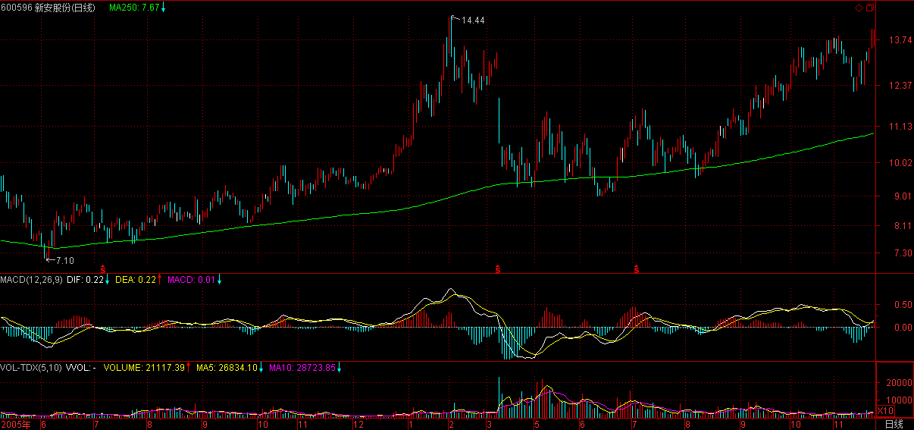
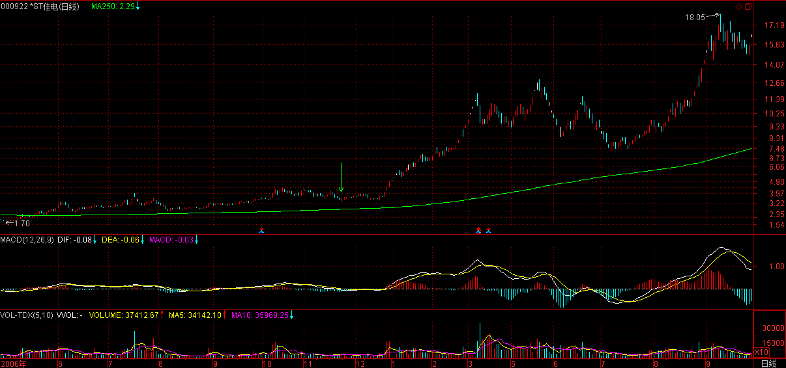
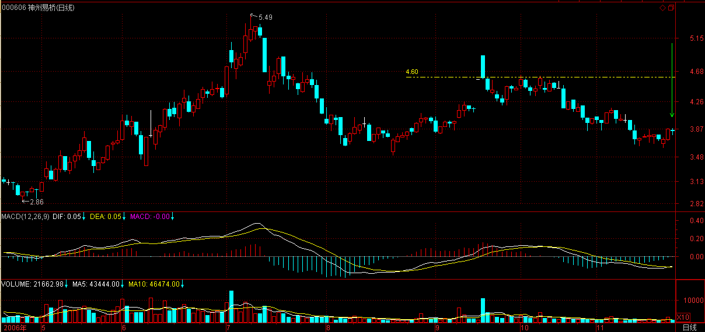

(2006-11-22 12:00:00)
设计一个程序，将所有投资对象进行分类，只搞那些能搞的，这是投资的第一原则。【韶山映山红】只搞那些能搞的，这投资的第一原则。这个原则解决的是ED的问题。技术系统只有应对方法，对早泄没有预防能力。所以这一课提出三个以上的独立程序组成程序组的解决办法。】
【韶山映山红】分类，就有可识别的边界，也就可以建立不受主观影响的程序。 “技术分析，最核心的思想就是分类，这是几乎所有玩技术的人都搞不清楚的一点。”“任何技术指标，只是把市场进行完全分类后指出在这个技术指标的视角下，什么是能搞的，什么是不能搞的，如此而已。”“只要站在纯粹分类的角度考察技术指标，那么，技术指标就会发挥他最大的威力。”】
【韶山映山红】《教你炒股票103：学屠龙术前先学好防狼术》防狼术也是一种分类程序。★可以做个专题，以后研究。】
在分类中，所应用的程序可以各色各样，但有一点是肯定的，即没有任何一个程序可以使得所选能搞的最终都百分百能被搞得高潮迭起，就像没有任何一个挑选面首的程序使得所选能搞的最终都能百分百被搞得高潮迭起。因为任何操作程序都必然面对“早泄”问题，就像任何关于面首的选择都必然面临“早泄”男的甄别问题。【韶山映山红】所谓早泄，就是背驰之后的转折失败。多因一果的必然。足够精简的程序才可用，预防一切意外和精简是矛盾的。任何操作程序都必然面对，能做的是接受这个事实，积极准备应对策略。】
而甄别“早泄”之所以困难重重，使得无数所谓高手死无葬身之地，是因为“早泄”这事还真得真刀真枪地实干才能发现，这比ED的甄别可复杂多了、风险大多了。ED，不需要深入介入就可趁早发现，但“早泄”不可以，怎么都要试上一试，而这玩意是一锤子的买卖，这次行还不能保证下次就一定行，因此要有效甄别、及早发现而减少损失就成了一个头号难题。【韶山映山红】在个股的走势类型分析中，ED是小级别延伸破坏大级别背驰，实际上是次级别走势没有反弹，所以不需要深入介入就可趁早发现。早泄是背驰之后的转折失败，比如第一种情况的笔破坏却没有形成线段，比如趋势背驰之后返回中枢却没有形成转折。】
许多所谓高手会宣称，出现什么情况，这股票就会长。【韶山映山红】背驰必转折就是这种宣称。走势不可预测，也就不存在真正的必然。缠论分析也如此。】但实际上，任何一种情况，都有着极高百分比的可能会出现“早泄”，确定能搞的突然就变成不能搞了，使得介入变成了套牢。这种情况，在投资里简直太常见了。【韶山映山红】买点出现，成为确定能搞的，还没有等对应的卖点出现就早泄，也就是买点被破坏，使得介入变成了套牢。实际上，任何一种情况，都有着极高百分比。趋势背驰也不能例外。】
那么，如何甄别“早泄”男？
首要的就是严格的资金管理，一旦出现“早泄”现象，必须马上退出，即使下面突然又不“早泄”了，又强力高潮了，也必须这样干。【韶山映山红】这一句说的不是“甄别”，而是应对策略。首先要对早泄有一个定义，以便判断。然后要有一个退出机制，背驰的介入，一旦触发退出机制，就要执行。即使后面又强力高潮了也必须这样干，才是严格遵守纪律，杜绝因为侥幸心理而死无葬身之地的情况。在个股的走势类型分析中，这种退出基本上是二卖的操作。如果不想轻易放弃，在盘整中回补，就要用三卖做最后的退出机制。】
而且“早泄”特敏感，一个偶尔的因素就可能导致，【韶山映山红】就像小转大，总是因为对某些意外的敏感才发生的，有些原因我们能够知道，还有些原因不知道，所以总感觉神出鬼没。既然特敏感，往往也就没有道理可讲了。】而要重新再来，还要等待一个长的不应期，【韶山映山红】不管原因是什么，只要出现了现象，就有存在即合理的问题，修复总是需要一个过程。小姐的身子丫鬟的命，本来有买点的一手好牌，最后走成了小转大的路。】一个长的调整过后，即使会高潮不断，也浪费了时间，有这时间，可搞的东西多了去了，这世界又不只有一个面首、一只股票。【韶山映山红】这是一旦出现“早泄”现象必须马上退出的另一个原因：机会成本。反过来说，如果是长期持股的操作，就要学会适应这个等待的长的不应期、长的调整。】
当然，这里说的只是基本原则，如果有一套严格的分批介入和退出程序，这一切都变得简单。【韶山映山红】“分批介入和退出程序”本身就是应对各种意外情况的策略，当然也可以很好的应对早泄。一买建仓，二买三买加仓，就是分批介入程序。盘背一卖、二卖减仓，三卖清仓，就是分批退出程序。】分批介入和退出程序，可以做个专题，以后研究。】
资金管理问题，涉及面很广，以后会专门分析介绍，这里说的是另一个方面，就是如何能在投资领域尽量避免碰到“早泄”男。【韶山映山红】上面说的是应对，下面要说的是预防。】
【韶山映山红】这里是缠师第一次说资金管理问题。“投资是一门艺术，而投资的艺术归根结底是资金管理的艺术，”“最后比拼的，其实就是资金管理的水平。”后面课程多次提到资金管理问题，还有专门的一课讲这个问题。】
“早泄”出现的根本原因在于介入程序出现破缺，出现程序所不能概括的异常情况，这对于所有程序都是必然存在的。【韶山映山红】什么是“早泄”？介入程序出现破缺，出现程序所不能概括的异常情况，由此导致的投资没有按照程序的预期进行，就是早泄。比如趋势背驰之后，第一段反弹返回前走势的最后一个中枢，然后却并没有形成本级别反弹，而是继续下跌。这就是一种破缺。所以《教你炒股票107：如何操作短线反弹》告诉我们：“具体的反弹操作一定是同次级别分解方式进行的，也就是说，30分钟级别的反弹，是按5分钟的节奏去处理的。”】
而一个程序出现异常，也就是出现“早泄”的概率有多大，这是可以通过长期的数据测试来确定的。【韶山映山红】没有能力对程序做根本的检测的时候，就可以用结果的大数据来反推。确定的不是原因，而是结果的现象。】
最简单的就是抛硬币，正面买、背面不买，这样也算一个介入程序，但这样一个程序的“早泄”率，至少是50%以上。【韶山映山红】抛硬币与市场走势完全无关，属于比较劣质的先验的方法，这就是抛硬币这种介入程序出现破缺的必然性。】
现在的问题其实很简单，就是如何发现一个“早泄”率特别低的介入程序。【韶山映山红】完全杜绝是不可能的。】
但答案很不幸，任何一个孤立的程序都不会有太低的“早泄”率，如果一个程序的“早泄”率低于10%，那就是超一流的程序了，按照这个程序，你投资10次，最多失误1次，这样的程序是很厉害的，基本没有。【韶山映山红】这里说的是“一个孤立的程序”不能概括的异常情况出现的概率。】
但问题不像表面所见那么糟，在数学中，有一个乘法原则可以完全解决这个问题。【韶山映山红】概率乘法定理，两事件积的概率，等于其中一事件的概率与另一事件在前一事件已发生时的条件概率的乘积。使用乘法原则的前提是，三个互相独立的程序的每一个程序都不能独立完成任务，且每一个程序都不可缺少，需要依次完成所有程序才能完成一个独立操作，只有满足这个条件，才能用乘法原则。】
假设三个互相独立的程序的“早泄”率分别为30%、40%、30%，这都是很普通的并不出色的程序。【韶山映山红】其实这样的程序已经是很优秀、很出色的了。缠师站得高，没感觉，我们如果以为自己鼓捣鼓捣弄一个什么程序就能达到这样的水平，那就可笑了。】
那么由这三个程序组成的程序组，其“早泄”率就是30%*40%*30%=3.6%，也就是说，按这个程序组，干100次，只会出现不到4次的“早泄”，这绝对是一个惊人的结果。即使对于选面首来说，有这样的高效率，大概连武则天大姐都要满意了。【韶山映山红】3.6%是三个独立程序同时失败，导致“早泄”的概率。只要有任何一个程序没有失败，就能救命，也就没有“早泄”。再次强调，使用乘法原则的前提是，三个互相独立的程序的每一个程序都不能独立完成任务，且每一个程序都不可缺少，需要依次完成所有程序才能完成一个独立操作，只有满足这个条件，才能用乘法原则。】
现在，问题的关键变成，如何去寻找这三个互相独立的程序。
首先，技术指标，都单纯涉及价量的输入而来，都不是独立的，只需要选择任意一个技术指标构成一个买卖程序就可以。【韶山映山红】技术指标的相互关系都不是独立的，都源自于价量的某种运算。】对于水平高点的人来说，一个带均线和成交量的K线图，比任何技术指标都有意义。【韶山映山红】均线是最简单的技术指标。缠师在这里对成交量还是有充分的重视，但整个原文很少涉及成交量的分析。★关于成交量，可以做个专题，以后研究。】
其次，任何一个股票都不是独立的，在整个股票市场中，处在一定的比价关系中，这个比价关系的变动，也可以构成一个买卖系统，【韶山映山红】缠师原文说：“市场个股之间有比价关系，这是市场的整体结构，要把握这点，必须对市场的总体结构有所把握。比价关系的变动是最重要的，这点以后会说到。”在《教你炒股票72：本ID已有课程的再梳理》和《教你炒股票73：市场获利机会的绝对分类》更具体的讲解了相关的分析方法。】这个买卖系统是和市场资金的流向相关的，【韶山映山红】比价关系也看标的的价格，和量价的技术指标的区别就在于，视角是“市场资金的流向”。】一切与市场资金相关的系统，都不能与之独立；【韶山映山红】还有哪些“与市场资金相关的系统”？★可以做个专题，以后研究。】比价系统，也可称之为资金面。】
最后，可以选择基本面构成一个甄别“早泄”男程序，但这个基本面不是单纯指公司赢利之类的，【韶山映山红】“不是单纯指”，意味着，基本面分析还是“公司赢利之类的”，但是那些还不够，或者是还有更多的小路可走。缠师前期反复说的基本面并不是独树一帜，只不过专门拿出来说的是基本面带来的套利机会，而不是基本面分析本身。缠论的基本面分析的框架和传统基本面分析没有本质的区别。这部分内容参见73课。】像本ID在前几期所说，国航李总当兵出身不会让自己的股票长期跌破发行价这么没面子，【韶山映山红】“国航的李总”李家祥2000年11月去国航以前任沈阳军区空军副政委，少将军衔。】还有认沽权证基本不会让兑现等等，【韶山映山红】认沽权证基本不会让兑现，那么为什么要买认沽权证呢？实际上这是一种看空股票的操作，对股票看空的时候，买认沽权证，股价真的跌了，认沽权证就会涨，就能赚取差价。】这才是更重要的基本面，【韶山映山红】这里说的基本面，有人认为就是小道消息，其实不然。“国航李总当兵出身”并不是什么秘密，各种报导很多，关键是要有心去关注信息，更重要的是要学会好好分析信息，得到符合实际情况的结论。这方面学习博弈论很有帮助。】这需要对市场的参与者、对人性有更多的了解才可能精通。【韶山映山红】这里举的两个例子都是攻其必守的思路。★可以做个专题，以后研究。】
【韶山映山红】《通向财务自由之路》(美)范K撒普 书摘：
如果你现在就开始采用套利思维，你会发现生活的每一个层面都存在着很多你以前忽略了的机会。
套利是一种发现的魔术，它是把每分钟的细节探究到令人讨厌的地步的艺术和科学。它是观察一种情形的每一方面的过程，就好像它是一颗钻石，在台上慢慢滚动，因此你可以观察到它的每一面，你看到的每一面都是独特的。它属于那些热爱探寻解决别人认为不可能解开的谜题的人。
随着时间的推移，总是会有一些人采取行动来阻止套利者，或者加入其中，使得这些机会越来越无利可图。
套利通常对时间是很敏感的。一旦有些机会被发现，竞争通常就会降低其利润，而且监管者最终也会堵上他们曾一度忽略的漏洞。……套利者从这些瑕疵中赚到钱。
总之，结论就是套利生涯与稳定无缘，因为一切都在变化之中——漏洞会被堵住，利润会渐渐变薄。同时，你会认识到，生命中的一切皆在不断变化之中，而接受这种变化就是经历人生愉快的冒险。你还会认识到犯错误是人性的一部分，我们正是这样学习和成长的。你的任务就是通过套利交易去纠正那些无效的方面，无论别人是否想让你去纠正。通过纠正错误你会得到报酬。你的工作就是把别人的策略或理念一点一点地批得体无完肤。如果你没找出什么可以批驳的，这是常有的事，那么你就转向下一个策略或理念。你看问题的方式、提及问题的方式都决定了你对套利的看法。
套利交易的成功取决于你愿意比别人多付出多少。套利是社会经济无效的清除剂，它使我不会成为一个观众。毕竟，人生只有两个地方可选，要么是竞赛场，要么是看台，而我宁愿选择搏击在竞赛场上。
】
【韶山映山红】
刀尖上的飓风 2015-05-31 10:34
计算估值我还是在电视上 跟谷为陵学的 计算几年来每股收益 还有预估值 要每一个都算 累死
皇甫娇 2015-05-31 10:38
你这是投资价值估值。A股牛股除了成长型股票成为牛股以外。大多数是投机价值预期成为牛股。
皇甫娇 2015-05-31 10:29
投机价值预估和传统的投资价值预估不同。是投资价值的溢价预期。用比价效应更准确。
https://www.taoguba.com.cn/Reply/1228421/17612093#17612093 】
当然，上面这三个独立的程序只是本ID随手而写，任何人都可以设计自己的独立交易程序组，但原则是一致的，就是三个程序组之间必须是互相独立的，像人气指标和资金面其实是一回事情，【韶山映山红】人气指标和资金面怎么是一回事情？人气指标为什么不是价量关系的技术指标？缠师这里说的人气指标是情绪指标BRAR里面的人气指标AR吗？还是泛指人气的反应？★可以做个专题，以后研究。】各种技术指标都是互相相关的等等，【韶山映山红】一般的技术指标都源自于量价的某种运算，也就不是相互独立的。】如果把三个非独立的程序弄在一起，一点意义都没有。【韶山映山红】原则就是三个程序组之间必须是互相独立的，否则就不适用乘法原则。】
【韶山映山红】情绪指标BRAR也称为人气意愿指标，由人气指标AR和意愿指标BR两个指标构成。
人气指标AR是反映市场当前情况下多空双方力量发展对比的结果。它以当日的开盘价为基点，与当日最高价、最低价相比较，通过一段时期内开盘价在当然股价中的地位，反映市场买卖人气的强弱指标。
人气指标AR计算公式为：
AR:SUM(HIGH-OPEN,N)/SUM(OPEN-LOW,N)*100;
其中N取值2～120，缺省26。
公式阅读理解：以开盘竞价为基准，N日冲高的累积对N日下探的累积的比值。
意愿指标BR也是反映当前情况下多空双方力量争斗的结果，不同的是它是以前一日的收盘价为基础，与当日的最高价、最低价相比较。一般情况下，AR可以单独使用，BR则需与AR并用，才能发挥效用。所以它们经常一同使用，可以把它们看成一个指标。使用此指标可以有效地提供投资人辨认高价及低价圈。
意愿指标BR计算公式为：
BR:SUM(MAX(0,HIGH-REF(CLOSE,1)),N)/SUM(MAX(0,REF(CLOSE,1)-LOW),N)*100;
其中N取值2～120，缺省26。
公式阅读理解：以前日收盘价为基准，N日冲高的累积对N日下探的累积的比值。 冲高是分子，没有冲高的记为0。下探是分母，没有下探的记为0。 BR与AR的区别在于基准，开盘价对前日收盘价就有高开、低开的区别。如果低开，缺口都计入分母，补缺之后的反弹依然计入分子。如果高开，缺口都计入分子，补缺之后的下探依然计入分母。
在T+1的A股市场，可以理解为，人气指标AR反映了日内买盘的推力对比抛盘的压力，意愿指标BR反映了买盘的推力对比隔日或多日抛盘的压力。所以，人气指标虽然是单纯的价格运算，却不算是价量关系的技术指标，而是视为资金面的指标。】
【韶山映山红】k线组合对情绪指标BRAR的影响：AR只关注日内，所以k线组合对她没有影响。
长上影的K线会做高AR曲线，长下影会做低AR曲线，但隔日的BR会有所修正。
跳空高开、低开都不会体现在AR上，也不会直接反应在隔日的BR上。BR实际上反应的是翻红、翻绿的程度。】
【韶山映山红】有没有哪个指标反映入场资金、离场资金的表现？★可以做个专题，以后研究。】
就像有人告诉你，面首的鼻子大就不会“早泄”，另一个告诉你耳朵大不会“早泄”，第三个告诉你胡子多不会“早泄”，如果真按这三样来选人，估计连武则天大姐的奶妈的邻居的奶妈的邻居的奶妈的奶妈的奶妈，都会不满意的。 【韶山映山红】鼻子、耳朵、胡子都是面部外貌长相的评判。各种技术指标都是价量的运算。】
【韶山映山红】技术分析的流派：道氏理论，波浪理论，格兰威尔的均线理论，市场轮廓理论，技术指标理论，周期理论。】
借地说说如何看本ID的文章，本ID不是股评，不会推荐什么股票，所以希望来本ID这里知道什么具体股票的，就不要浪费时间了。试想，真有本事的人，挣钱都忙不过来，怎么会当股评。【韶山映山红】缠师这句话影响了很多人。那些蠢货以此抨击他人，而那些高手也因此沉默是金了。】本ID这里，股票只是其中一个小项目，只是希望来这里的人也学会怎么挣钱。【韶山映山红】既然挣钱都忙不过来，缠师自己为什么要花时间来絮叨教你炒股票呢？小道而大道。】所谓六艺，不会挣钱，在经济社会里还算人吗？ 【韶山映山红】《周礼·保氏》：“养国子以道，乃教之六艺：一曰五礼，二曰六乐，三曰五射，四曰五御，五曰六书，六曰九数。” 不知道缠师的“六艺”除了“会挣钱”之外，还包括什么。】
看本ID的文章，要学会方法，当然，本ID有时候可能有意无意就会透露点东西，但你必须有分析能力，要吃透方法。【韶山映山红】强者文化是来学习，发愤图强。而不是来捡漏。】就像10月24日告诉你认购权证介入的一个原则，【韶山映山红】10月24日课程《教你炒股票06：本ID如何在五粮液、包钢权证上提款的！》】26日武钢认购权证就大幅启动，2周从3毛多长到1块多，翻了快4倍，如果你真能吃透本ID所说的方法，这种机会是可以把握的。【韶山映山红】580001武钢JTB1认购权证，行权价2.90元。对应的580999武钢JTP1认沽权证，行权价3.13元。差价0.23元。2006.10.24日600005武钢股份收盘价2.79元。】
至于现实的股市，本ID在前面已经反复说了，只要是牛市，股票都要表现的，前几天大家可能都很烦银行股，因为大家都没有，但昨天开始大家就高兴了，因为银行股不动，其他股票开始动。【韶山映山红】屁股决定脑袋。所以持股者才是真正的空头。】别恨银行股，哪天它们真见顶了，市场也好不了，它们是红旗，各位只要看着红旗还在打，各根据地就可以继续轮动大干了。股票的运动是有规律的，好好学习，这一切都能在你的把握中。【韶山映山红】银行股是红旗，只要红旗还在打，各根据地就可以轮动大干。】
至于说本ID想炫耀自己，这种废话根本不值得反驳。本ID在投资市场曾干过事情牛的程度超过你们所有人的想象，本ID还用向你们炫耀？本ID现在只是把东西抖点出来，活跃一下博客的气氛，没有其他任何想法。【韶山映山红】西出阳关无故人。】
【韶山映山红】淘股吧。】
皇甫娇 18-09-25 09:19
不要歪楼。
娇只是看见标题进来发现是做强势股的，就发一些小单子给大家点信心。
小资金跟着热点，是快速做大的方法。基础还不行的就加强练习。
没有哪个股票是不符合缠论结构的。
要有信心。信心是经过刻苦的磨练干出来的。
而不是自己不行就开始质疑理论，接着就要看见娇才有信心。
2015年股灾在淘股吧直播了娇也做了。还有学子疑虑。
至于那些唧唧歪歪的，你一旦站在了顶峰，总是不屑于理会。
明月照大川。不需要弘扬。它就在那里。不灭。
还做着期货两个品种。娇没空和大家玩。趁 放假说几句 。 再见。
【韶山映山红】南无月光如来注：
前面这些章节都是讲做股票如何从理念上认识和把握这个市场的脉络，从而为以后深入学习做股技术提供理论层面的保障。就是中国特色社会主义的建设必须有理论保障一样！
1、缠师从数学原理上说明了提高股票成功率的方法。就是用三个独立的判断股票能不能搞的程序，根据这种概率公式，会大大减少操作的失败率（提高成功率）。前提是这三个程序必须绝对独立。
2、缠师列举三个独立程序：技术指标比价关系、基本面。实际操作中，比价关系和基本面作为独立程序一旦确立，短期的状态是相对固定的。唯一不断变化着的就只有技术指标。
3、要能设计出三个独立的程序来共振选股，那可真爽啊！
4、本章中对缠师的评论较多的，是缠师的性别问题，还有缠师说到的悟道问题。切以为，缠师作为最先从股市上成功者之一，自然对生计没有任何的忧虑了。自然博览群书，学问可以。要说已经悟道，恐怕不见得。而且从他满文以性作比方来看，根本悟道者不相称。再次说明：缠师是男性的可能性大。
http://blog.sina.com.cn/s/blog_60c36c130100i0eg.html 】
[匿名] 冰火 2006-11-22 12:05:49
沙发，我给楼主留言啦，楼主查看一下哦！谢谢了^_^
==============
什么留言？
2006-11-22 12:14
缠中说禅
[匿名] 快 2006-11-22 12:18:40
11月16日提到的北辰是否也可以理解,从3-4元布局到10元以上呢?
=============
本ID不是股评，要自己学会看走势。
2006-11-22 12:16
缠中说禅
匿名] 快 2006-11-22 12:18:40
11月16日提到的北辰是否也可以理解,从3-4元布局到10元以上呢?
==============
本ID不是股评，要自己学会看走势。
2006-11-22 12:19
nn
2006-11-21 22:05:15
但还是请各位注意，不要轻易介入涨幅过大的股票。要从最开始就学会用尽量小的风险换取尽量大的利润。
要长期胜利，就一定要坚持用最小风险换取最大利润，风险是第一的，这里没有什么高低之分。亏损是按百分比的，一百亿和一百万，亏了百分百，都是零。
人弃我不一定取，人抢我一定给。
2006-06-19 16:45:17
对于市场的参与者来说，首要且时刻必须清楚自己目前介入模式的当下，而市场中的绝大多数人，是不知道自己在干什么的，狠一点说，就是死都不知道怎么死就死了，市场基本由这种人构成。这种构成与资金实力无关，大资金死起来更快，一夜之间土崩瓦解的事情，本ID见得多了。此外，如果你一定要很习惯地、理性地追问什么是理性，那么，相对那些光说不干的所谓理性，今早15元多买N中工就是理性！理性是干出来的，今天，你干了吗？
============================
非常欣赏楼主的新思维和大智慧,但有一点不明白,楼主为何说15元多买N中工就是理性?现在我不是想问N中工值不值这个价,我是想知道假如我在那个位置买了,后面的情况大家也知道了,我的问题是在这个长达几个月的过程中应该如何处理才是最佳的操作手法?股票中太多原则都互相矛盾,比如你鼓励大家” 不要轻易介入涨幅过大的股票。要从最开始就学会用尽量小的风险换取尽量大的利润。要长期胜利，就一定要坚持用最小风险换取最大利润”但符合此原则的股票多半处于休眠状态,不符合你的G点之说,能够成为G点的股票一定是涨了一大截的,比如现在的银行及超级大盘股,介入吧,怕早泄,一搞就休养几个月甚至几年才能重新勃起,不介入吧,它又唧唧歪歪的涨个不停,问题太多,就请教这两个问题吧,先谢谢了,请楼主赐教.
2006-11-22 12:13
缠中说禅
[匿名] nn
非常欣赏楼主的新思维和大智慧,但有一点不明白,楼主为何说15元多买N中工就是理性?现在我不是想问N中工值不值这个价,我是想知道假如我在那个位置买了,后面的情况大家也知道了,我的问题是在这个长达几个月的过程中应该如何处理才是最佳的操作手法?
==================
开盘就买中工当然是理性的，因为第一只，【韶山映山红】全流通改革后上市的第一只股票。】而且开盘的位置也不太高。后面之所以出现如此走势，是中国特色的管理层所造成的，但开盘15元多买的，后面18、19元随便你出，由于情况发生了意外，当然就要选择退出，这还是上面的原则，买股票一定不能追高，这样一旦发生意外，退出也简单。【韶山映山红】当日基本上15元随便买，下午有短暂时间的冲高，一天都不买，非要去抢冲高的，那是自己作死，怨不得别人。详情看第4课及前后两篇文章。】
【韶山映山红】静姐04-08】
2006-11-22 12:25
缠中说禅
[匿名] 冰火 2006-11-22 12:19:49
在留言板上的留言。
===========
没看到有你名字的
2006-11-22 12:26
缠中说禅
哦，对不起，没看仔细，原来你改名字了。
2006-11-22 12:27
缠中说禅
水热火深 2006-11-22 10:58:10
多谢大侠指教。我就是那个冰火。我大概明白你的意思了，假如Y是认沽行权价，X是认购行权价，那企业为了自己的利益会尽量保证行权当天的股价不低于Y，所以认购权证的最终价格会不低于Y-X，所以只要认购权证的价格跌到（Y-X）以下的区间内，都是比较安全的。是这个意思吗？
=============
不一定要跌到那区间，基本就不会跌到那区间，在上面高点的位置就可以了，那是一个底线，基本不会跌破。所以你就有了一个几乎绝对安全的标准。像最近的武钢，几乎绝对安全线在0.21元，在0.35元见到底部。等于你用最多30%的风险去赌300%的利润，这样当然可以介入了。【韶山映山红】580001武钢JTB1认购权证，行权价2.90元。对应的武钢JTP1认沽权证，行权价3.13元。差价0.23元。在认股权证存续期的最后5个交易日，武钢股份上市流通的认股权证持有者有权将所持有的武钢股份认股权证以0.20元/份的价格出售给武钢集团。所以缠师说“几乎绝对安全线在0.21元”。与包钢权证不同的是，武钢认沽权证是美式权证，随时可以行权，其时间价值基本上为零。而武钢认沽权证的行权确认价为3元，比较当时的权证，武钢的认沽权证投机性最强，当然风险也就最大。 】
【韶山映山红】桃花配图：
2006-11-22 12:32
缠中说禅
馋中听禅
2006-11-22 12:26:59
已介入580003【韶山映山红】580003邯钢JTB1。】 580002【韶山映山红】580002宝钢JTB1。】 谢谢
==============
你现在介入的位置都不算太好，有一定的风险，属于中途介入，一旦出现再次上涨，也就是出现二次上涨，就一定要找好出货的时机，对于权证，这个时机就是放巨量。【韶山映山红】缠师关于成交量的不多的描述之一。】
2006-11-22 12:35
缠中说禅
[匿名] 快
2006-11-22 12:34:15
我女儿这个月满两周岁,从现在开始布局,请教数女"设计一个程序",在20年之后把她的驾御能力培养成你的几分之一呢?
============
对不起，本ID没养过孩子，想起孩子就头疼。
2006-11-22 12:38
缠中说禅
[匿名] 伤心太平洋 2006-11-22 12:38
你好，你不说北辰还好，说起来上吊的份都有了！ 上市第二天，就进去了，结果拿了十来天，启动前却出来了，现在是涨不停，不停涨！当初的想法是：股价低，盘子大（方便大资金出进），有比价性，基本面好，可受不了老公唠叨。
是不是耐得住寂寞的人才能成为真正的高手呀！谢谢指点！【韶山映山红】耐得住寂寞的人才能成为真正的高手。】
【韶山映山红】601588北辰实业。】
===============
主要是你介入的时机不对，或者介入的动机不对，【韶山映山红】601588北辰实业是缠师向大叔推荐“在3元多吸纳”的票。提问者在上市第二天就进去，不算“介入的时机不对”啊。 当初的想法是：股价低，盘子大（方便大资金出进），有比价性，基本面好，也不算介入的动机不对吧？ 】
介入时，首先要想好是短线还是中线介入，如果是中线，就要有至少两个月以后的操作期。【韶山映山红】这里说的是先想好短线中线，后面讲的是确定自己的操作级别。】
介入的动机，对于投资特别重要，这点以后会说到。【韶山映山红】“介入的动机”？不记得后面讲过这个内容，检索“动机”也没有什么结果。待确认。介入的动机应该是什么样的？★可以做个专题。以后研究。】
2006-11-22 12:47
缠中说禅
[匿名] 朝阳一小猪 2006-11-22 12:43:51
强人啊强人，可是程序怎么设计法呢？不能指望我们大家都去学习股票分析程序设计啊，即便能学会，等我们学完了研究完了牛市也结束了，普通人只能一只只股票自己看啊，工作量巨大啊。好象有种些股票分析软件叫什么飞狐交易师的是可以用户自己设定一些指标值进行选股的的吧？想知道博主是怎么弄的啊，一定要不吝赐教哦！
===================
不是设计程序，是用想好一套系统的方法，不要企求有什么独门暗器。【韶山映山红】１，缠论是一套系统的方法。２，缠论不是什么独门暗器。】
请你在好好读读，慢慢理解，会悟出点东西来的。
2006-11-22 12:50
缠中说禅
开盘了，先下，再见。
2006-11-22 12:50
缠中说禅
[匿名] 飞龙 2006-11-22 12:49:47
楼主应该不缺钱吧，为什么还要花大把时间炒股呢？
===========
炒股不花时间，只有牛市时候才需要看股票，本ID2001年到2005年，4年连一眼股票都不看。现在就算看，一天也就4小时，
这不是钱的问题，而是一个智力问题，股票对于本ID来说，就是一个智力游戏，休息的好方法。
2006-11-22 12:52
缠中说禅
开盘了，先下，再见。
2006-11-22 12:53
缠中说禅
友情提醒，大盘短线最大的风险是1972到1977的缺口，【韶山映山红】缺口有向下的吸引力，所以是风险。】
短线在所有板快都轮动一次后，短线的震荡在所难免。应有一定的心理准备。【韶山映山红】线段中枢递归的走势分析，这时候是1分钟趋势，第二个中枢之后背驰的概率比较大，所以要“有一定的心理准备”。】
【韶山映山红】复盘：第二天1分钟上涨趋势出现背驰，然后的几天走出1分钟向下盘整。】
2006-11-22 14:27
缠中说禅
[匿名] 妖女的文章写的 2006-11-22 14:16:39
有点狂，但是回复网友的问题态度还是不错的。我也有几个问题想请教：
对于你选股票的所谓的3个可以相乘起来的条件还有点不是很明白。第二点所谓的市场的比价系统，买卖系统不太明白，能不能说的更清楚点？是不是指市场当下的热点。比如前一阶段的炒银行股，大盘股，然后现在的炒二线蓝筹和非蓝筹，是不是这个意思？你说的第三个条件比较简单，但是作为我们一般的投资者又如何知道！散户的消息面太差了！
================
你的问题晚上回答，3点后有一个谈判，必须走了。再见。
2006-11-22 14:35
缠中说禅
缠中说禅 2006-11-22 14:27:22
友情提醒，大盘短线最大的风险是1972到1977的缺口，短线在所有板快都轮动一次后，短线的震荡在所难免。应有一定的心理准。
[匿名] 中银国际 2006-11-22 14:37
什么意思？是说要跳水吗？
[匿名] 中银国际 2006-11-22 14:41:36
哎呀，现在真的跳水啦，从最高位已经跳了30点啦，楼主真神人呀。
============
震荡就是折腾，利用折腾，技术高的就可以玩轮动的游戏。
大盘震荡，股票可不一定震荡，创新高的股票仍不会少。
【韶山映山红】复盘：第二天1分钟上涨趋势出现背驰，然后的几天走出1分钟向下盘整。】

2006-11-22 16:50
缠中说禅
[匿名] 妖女的文章写的 2006-11-22 14:16:39
对于你选股票的所谓的3个可以相乘起来的条件还有点不是很明白。
=================
复习一下初中的概率
第二点所谓的市场的比价系统，买卖系统不太明白，能不能说的更清楚点？是不是指市场当下的热点。比如前一阶段的炒银行股，大盘股，然后现在的炒二线蓝筹和非蓝筹，是不是这个意思？【韶山映山红】提问者所说的是轮动，不是比价。】
===============
不是，
市场个股之间有比价关系，这是市场的整体结构，要把握这点，必须对市场的总体结构有所把握。比价关系的变动是最重要的，这点以后会说到。【韶山映山红】在72和73课更具体的讲解了相关的分析方法。】
你说的第三个条件比较简单，但是作为我们一般的投资者又如何知道！散户的消息面太差了！
==============
很多消息根本就不是什么秘密，关键你要有心。【韶山映山红】要学会关注那些真正影响股价走势的信息。】
不是要你瞎听消息，而是要好好分析消息。【韶山映山红】要学会分析信息的逻辑关系和因果链条。】
是你在使消息，而不要被消息使。 【韶山映山红】听消息炒股就是典型的“被消息使”。】
2006-11-22 17:02
缠中说禅
[匿名] 飞龙 2006-11-22 16:15:58
我炒股已有N年了，运气好赚了几百万，但总觉得不能一辈子炒股啊。现想办实业，不知做什么；给别人打工，也不可能；写写博克，又没有楼主的才情。受共产党教育多年，没有什么信仰，钱越多人越空虚，痛苦啊！请楼主指点迷津，多谢！
==================
先把房子、车子买好，把几十年生活费用、养孩子的费用等等留出来买国债，还有一些基本的保险。
把上面所有问题都处理好了，如果还有闲钱，就继续炒股票。
有空来本博客看看《论语》，看看“缠中说禅”。人生不悟道，才是真正的白活。炒股票也是可以悟道的，边炒边悟吧。
实业就不要干了，炒股票的人干实业，基本很难成功。干实业太累，风险比股票大多了。股票的风险，一个人就可以控制，实业的风险，谁都控制不了。
2006-11-22 17:10
缠中说禅
[匿名] Jim
2006-11-22 16:37:35
现在证券分析软件越来越高级，都有荐股功能吧？多下载几个不同公司设计的证券分析软件，分析某个股票时，如果10个有7个建议买进，就买进，反之亦然。
=============
这样和只有一个系统没什么区别，所有分析软件的原理都是一样的，等于一回事。 【韶山映山红】都属于技术指标公式类，价量的不同计算公式或组合而已。】
2006-11-22 17:11
缠中说禅
看了四小时的盘，谈了一小时的判，本ID要去找好吃的了。再见。
2006-11-22 17:12
缠中说禅
[匿名] 倒霉呀！ 2006-11-22 16:29:52
从上周偶尔发现了这里，就再也止不住每天要来看看了。。呵呵。。真的很佩服很佩服楼主呀！今年股市大牛，于是N年没有炒股的我一激动在5月份有色金属股涨到不能再涨的时候义无反顾介入了，结果在大家都说随便都能挣钱的大好时机，我竟然赔了40%，现在虽然大势趋好，但是我依然深套其中，呵呵。。看了楼主的文章，感觉自己没有炒股的脑子呀！
===================
临走还看到你的帖子，随手也回答了。当一个教训，以后一定不要追高介入任何股票，一定要在调整结束后将启动时介入，这是在市场中生存的最好办法。 【韶山映山红】介入时机：１，调整结束后。２，将启动时。 】
2006-11-22 17:14
缠中说禅
明天继续孔二爷，再见。
2006-11-22 17:15
缠中说禅
还没去吃饭，网上转了一圈，去孔大叔那里惹了点事：
缠中说禅 2006-11-22 18:12:44
风吹万树暮云低,人海孤行影自迷。
===============
尚可
寒夜无眠非不困,晴天欲雨有何奇。
============
拙，“有”字音韵不佳，“又”吧，去声
愿闻金鼓飞黄鹤,岂爱玉笼锁碧鸡。
===========
愿闻，太露
温酒一杯且稍候,凤凰台上唱虹霓。
============
温酒一杯且稍候，拙。
缠中说禅 2006-11-22 18:19:00
本来想步韵一首，但看到孔大叔不按平水韵来，四支、八齐混着来，马上没兴趣了。
孔大叔写诗，不说了。
2006-11-22 18:27
缠中说禅
[匿名] 射男哥哥 2006-11-22 17:57:29
检点数女股票高论:做股票就象做爱;选股票就象选面首.早出如男人早泻;高点如女人高潮.疲软股票如ED男人,调整期如男人不应期,大牛市不用安全套......古今中外,闻所未闻!尽管数女没养过孩子(26岁 亿元资产 女博士),如日后真有了一男半女,上面如此文字怎么让儿女过目呢?想一想哥哥我都后背发凉!人无远虑，必有近忧。人没有深远的审察、思虑、谋划，必然缠附祸患。
===============
本ID叫缠中说禅，孩子是不会知道缠中说禅是谁的，等孩子知道时，估计新浪都倒闭了。
2006-11-22 18:28
缠中说禅
[匿名] 不玩喽 2006-11-22 22:06
丛天涯跟到这里有一段日子啦，玩得蛮开心，还有音乐听，看楼主的标题和各位的回帖事件很有趣的事情。楼主如果真是个女孩，那么她是个好妞，好妞就是常看常新，使人发狂。俺这几天，竟然忘记本份，冷落了身边德甜腻腻，也不去树林子里掰香蕉，整天扒在这里码字，猿人嘛，要说爬树那时嗖嗖的，码字可是重体力，结果呢，昨天劳动了个把小时，弄了几十个鸟字，还要添上该死的效验码，不知谁的鼠标一点就给删了。
俺寻思楼主不会这么干的，俺更流氓的黑字白纸都在这里搁着，安然无恙。昨天也就说了马克思几句坏话吧，楼主不至于。那么就是网络警察了，想到此，俺怕，俺还没活够，俺还要掰香蕉搞女猿人上山爬树捉猫猫。这里的game咱就over了。政府伟大，楼主拜拜，不过音乐会俺还会躲在角落里偷听滴，各位继续happy!
=============
没那么严重吧，大概你的帖子有敏感词。
2006-11-22 22:24
[匿名] 孔庆东
看起来侄女还有几下子，以后不要到我那捣乱了，我会经常到你这逛逛。股票呀克西
2006-11-22 21:20
缠中说禅
[匿名] 八卦 2006-11-22 22:16:36
我刚才发的帖子怎么没了？没骂脏话啊？？？
===========
本ID是不删帖子的，这里的人都知道。是不是你的帖子带了连接，或者其他新浪不能接受的东西。
上面不还有你的帖子吗？
2006-11-22 22:26
缠中说禅
[匿名] 朗月无花 2006-11-22 18:47:32
楼主一般都是刚发完帖子才评论，今天6点多了还评论，少见。
===============
今天突然降温，家里温暖如春，就不爱出去了，边写孔二爷边在网上溜达。
任务完成，明天中午上传。
各位晚安。
2006-11-22 22:33
缠中说禅
[匿名] CC 2006-11-22 18:54:52
对你的名言有点不理解,为什么说做股票就象做爱呢,这之间有什么可比类推之处呢
2006-11-22 22:34:07
[匿名] CC 博主来了,能不能给解释一下刚才的问题,先谢,因为是新来你博客的,对你的观点还有些陌生,但对你讲的某些理念是认同的
==================
刚看到你的帖子，看来还走不了了。
连续几章不一直在比喻着吗？这种事情只可意会，不可言传。这里可没有变成黄色博客的打算，所以给点幽默感，多干多体会。
2006-11-22 22:44
缠中说禅
好了，晚了，下了，再见。
2006-11-22 22:49
缠中说禅
青皮六 2006-11-23 00:55
LZ台鉴:听你的音乐,看你的文章很是享受.在天崖问过LZ关与股市ED和早泄的问T.在这里看到LZ详论,很受用.再向LZ请教一个关与技术面和基本面的问T.看了LZ股论,似乎对基本面不屑.只讲技术.还拿作爱说事,首先不研究基本面,你如何知道一个人(男或女)是干净的,安全的.一个人作爱技巧再高超,要想让对方达高潮,恐怕没本钱还是不行.<<肉蒲团>>赛昆仑对未央生说:没本钱,你难道打算在女人肚皮上吟诗作赋.所以说技术好只是前奏,最后还看基本面.侯教
===========
本ID不看通常所看的基本面，只看本ID认为是基本面的基本面，例如国航的李总是当兵出身的。【韶山映山红】“国航的李总”李家祥2000年11月去国航以前任沈阳军区空军副政委，少将军衔。】
2006-11-23 11:56
缠中说禅
昨天本ID在盘中友情提醒要对震荡要有心理准备，大盘经过昨天下午随后的跳水与今早的震荡，越来越接近真正的调整。
注意，本ID说的调整只是短线的，好的个股甚至会借调整启动。
【韶山映山红】1分钟线段中枢递归走势分析图上的上涨趋势背驰，“越来越接近真正的调整”。】
大盘在进入调整前有极大可能先制造一个多头陷阱，大盘在1923-1925留下突破缺口，1972到1977留下中继缺口，如果是多头陷阱，一旦出现衰竭性缺口，就是警报拉响。
【韶山映山红】1分钟线段中枢递归走势分析图上的突破缺口和中继缺口。】
2006-11-23 12:10
缠中说禅
以后提问题请到新帖子，否则本ID不看老帖子，就不知道有人提问题了。
2006-11-23 15:29
缠中说禅
[匿名] 信禅人 2006-11-23 12:42:09
说得有水平,很有心.以后会经常到此走走.想请教:股市还能走多远?资源类的股票还能进吗?如原水(600649) 【韶山映山红】600649原水股份。2008.05.12变更为城投控股。】
【韶山映山红】上面是前复权的图形。缠师讲究不复权，所以这时候还不算放量突破、回踩不破。】

============
没表现的都回表现的，这也不例外。原水刚上年线，回试年线不破就可介入。【韶山映山红】日线笔一直围绕年线上下震荡，所以还等待“回试年线不破”。】
【韶山映山红】600649原水股份在6124牛市中的表现。】
但短线注意大盘调整产生的影响，如果能逆大盘调整而启动，则力度会较大，否则跟着大盘走，就没什么意思了。
2006-11-23 15:33
缠中说禅
[匿名] 一声叹息 2006-11-23 13:15:39
已经介入600267，600868。请博主鉴定，谢谢！【韶山映山红】600267海正药业，600868梅雁水电，2012.11.15变更为梅雁吉祥。】


============
前者未上年线，【韶山映山红】600267海正药业。】以后最好不要介入这类股票。但既然介入了，就持有吧，反正没启动的最终都会启动，会轮到它的。
【韶山映山红】日线图，不复权，日线笔在年线下蓄势攻击，回落，二次筑底，盘整背驰。缠论到这里还只讲过突破年线、回踩不破，所以缠师不建议介入。其实缠论的一买就是这样的位置。】
【韶山映山红】周线图上看这次的突破年线。】
【韶山映山红】2004.09.29的10送8使得K线呈现巨大缺口。股价不能迅速回补缺口，就意味着后续将继续疲软，表现在年线上就是始终在年线下远距离运行，并且拉低年线。】
【韶山映山红】上面问答里类似的情况，600649原水股份，10送2.2也造成了缺口，但是迅速回补了，对年线的影响就很小，在6124那波行情中涨幅也要大些。】

后者在年线整理，耐心等待整理完成吧。【韶山映山红】600868梅雁水电，2012.11.15变更为梅雁吉祥。“耐心等待整理完成”是说整理完成就开始涨。这个当时已经算站稳年线了。】
【韶山映山红】600868梅雁水电在6124牛市中的表现。】
2006-11-23 15:37
缠中说禅
注意
以后提问题请到每天的新帖子，本ID一般很少看老帖子的评论，错过了就不好了。
2006-11-23 15:38
缠中说禅
[匿名] 小明2 2006-11-23 19:57:41
怎么把我的帖子删掉了？
我只是问大盘的方向啊！
============
本ID从来不删帖子的，可能你的帖子有些什么问题，新浪给手起刀落了。
2006-11-23 21:04
缠中说禅
请各位不要在老帖子里问问题，一旦有新帖子，请移步新帖子，否则本ID看不过来。谢谢。
2006-11-23 21:05
【韶山映山红】刑天-唐伯志的博客 】
(2006-08-14 01:55:47)
成功的投机者需要建立两个系统：分析系统和操作系统
股票投机交易是什么？
它的本质除了为公众市场提供“润滑”作用、为国家提供税收以外---最根本的目的是为了最大化的且合法的赚取利润。
为了达成这个目的，一个稳定的有效的分析系统和可以执行的严谨的交易系统是达成这个目的的充分必要条件。
事实上这两个系统对于所有的投机者都是不可或缺的。只是对于所谓成功的投机者而言它的系统在获得利润和保障获得利润方面更为有效而已。
对于我来说，一个成功的投机者必须能够在100次短线交易中获利70次，而且它的盈亏比不能低于3：2。无论是采取两日交易还是周交易。
为了达成这个目标，我建构了自己的分析----决策和操作系统-----魔山理论。
魔山理论是建立在前人的基础上的一套新的分析系统。
这个系统全面继承了关于技术分析的三大假说：
1、市场行为包容消化一切
2、 价格以趋势的方式演进
3、历史会重演
在这个基础上，魔山理论还继承了周期技术的一些基本观点并把它和经典技术分析融合在一起。
4、价格趋势是不同周期叠加的结果
5、股票交易追求的是单位时间内价格的上涨速度
6、价格形态和周期的契合是进入市场的前提条件
7、追求波浪的同时追求价格趋势的涟漪
8、制定严格的交易计划，并严格的执行之，计划中必须要有止损概念，止损是我们交易成功的最后的保障，由于止损的存在，我们才可以在第一时间内使自己摆脱错误。
9、热爱市场而不要试图鞭挞市场，市场不是我们的敌人，它应该是我们的朋友。
第一条到第三条告诉了我们，如果你是技术型的交易者那么除了技术分析以外你不要依赖和听信任何其它系统给你的提示或者启发。我们在交易之前之后和之中，需要连贯的逻辑和清醒的头脑。逻辑的矛盾会令我们混乱从而导致心态的败坏从而使我们走入交易的误区。
第四条到第九条告诉了我们具体的交易方法。我们所看到的图表事实上是一个价格的速度图表，趋势的曲线可以理解为价格单位时间的位移。因此，魔山理论格外关注对时间和价格运动速度的研究。
在1000多只股票中如何选择速度最快的股票成为我们的第一个任务。我选择的大多数股票通常都在次日成为涨幅榜前列的股票。这方面我的公开操作已经成分给与验证。
交易必须是快乐的，充满仇恨的交易是遗憾的。
市场从来是公平的，不管有多少黑幕，对于大多数人来说它依然是一个公平的舞台，所有的人都可以利用自己的智力去赢取成功---市场不会考虑你的地位你的血统和你的学历。市场只接纳那些尊重它的人。很多人失败了，便抱怨市场的不公平，但是，事实上根本原因在于他或者她从来没有认真的研究过交易技术，他们更多的时候偏执的认为这个市场就是个赌博的地方。因此，便派生出所谓的跟庄派，消息派，认为那些所谓的庄家掌握着市场的终极答案。这些庄家是他们挑战市场的主力。这种作弊情节笼罩着中国的股票市场，并在股评家和业余交易者之中广为流传。因此，孙子兵法被荒唐的引入交易中。他们要向市场宣战，他们要和一切力量纠合在一起挑战并战胜市场。这种荒谬在去年的交易中得到了彻底得破产。而能够幸免于难得人确是那些精通交易技术得人。
市场是个巨人，我们要学会追随他得脚步前进，去爱它象热爱我们得亲人那样。报着这种心态去交易，你的市场交易技术才可以发挥的淋漓尽致。
【网文】独立交易系统之比价效应
雪儿111
2015-04-24 08:34
2013年10月22日，我的资金是9万，我是从那一天开始悟道的，跟大多数80后股民一样，过去的N年，我是亏损的，我投入的资金已经记不清了，算60万的话，我也亏损了85%，我不像几位大神从开始炒股就盈利，疯狂翻倍，从这个角度来说，我跟大多数小股民的经历类似，所以我才会耐心去回答每个散户的提问，可能我的回答，影响了别人炒股的一生，结个善缘总是好的，但是我不像好运哥和瑞仙一样说回馈淘股吧，我在这里没学过任何人技术，没请教过任何人，甚至没和任何人交流过股票，从来只有我帮别人，从来只有别人欠我，只是一个偶然的机会来到桃县，且行且珍惜。
一年半时间，我做到了八位数，我自己很满足，也很感恩，我中间借过一次50万，其他都没融资和借钱了，我是反对杠杆和配资的，牛市里可能看不出隐患，爆仓过几次后你就明白了。上周四，看到赵神1万倍，这周四，看到90后老乡5万到74万只用了2个月，超短真神奇啊，我今年尝试过10次，虽然成功了8次，但是我依然不敢说自己超短多牛B，可以告诉大家，我百分之80%的资金积累来自于中线，也就是一个股票的主升浪，我有自知之明，哪些是我做不到的，这里给大家提个醒，别人不管再牛B如果不能变成你的，那对你来说毫无意义，管好自己的钱，管好自己的账户，管好自己的心。，
比价效应首先必须是同级别的，否则没有任何意义，比如银行板块比价地产板块，比如生意宝比价熊猫烟花。
其次比价效应必须是有关联的，银行板块比价农业板块，生意宝比价楚天高速这就没有可比性，范冰冰和宋丹丹是不需要比价的，虽然都是ABB，所以不要死读书。
比价，顾名思义，价格对比，是基本面、走势图形在一定周期的动态表现，比价是动态的，不是死板的，一般来说，只有板块比价和个股比价才有研究的必要。
比价关系的存在本质是资金和市场需求的矛盾导致的，在一定时期，市场的总资金量是有限的，尽管现在中国大妈资金号称无限，但大妈并不能主导走势，为什么？因为大妈不是主流资金，既不能主导，也不能引导，跟风的，永远成不了牛人，而市场需求却是无限的，主流资金在流入市场的过程中，就存在一个时间先后的问题。 有了时间的先后，就有了套利空间。
板块比价：大家一定要注意，有些板块往往是同步的，也就是说主力同时看好此2个板块，那么比价的效果就大打折扣，比如今年的银行板块和券商板块，极少出现一个大涨一个大跌的情况，但是银行和地产比价就很有意义了，大家可以看下2个板块今年的主升时间段。
概念板块之间比价同样非常有用，尤其是主流热点，比如一带一路比价互联网金融，绝对让你热血沸腾，绝对让你一直游走在主流热门板块之间。
个股比价：最有意义的个股比价只有两种，一定要记住，举个例子，高送转龙头赛像科技和永大集团比价。（同概念）P2P龙头生意宝和同板块同热点的腾邦国际比价，（同板块）如意集团和全通教育比价（同大牛）。
为什么只有这三种可以比，因为这三种是实实在在可以让你赚钱，让你吃大肉的，其他个股当然也可以比，但是2个股都要亏钱的，有什么好比的，想起一句话，一杯茶，一支烟，一个烂股看半天，2只垃圾股是没必要比的，除非是比哪个跌的快，亏得多。
比价系统为什么能成独立的交易系统，他的哲学原理就是高抛低吸。这个高抛低吸不是通常意义上的分时高炮低吸也不是震荡平台的高抛低吸，而是比如券商板块涨高了，高抛之后买入基建板块，比如恒信移动涨高之后买入北纬通信，其中的微妙关系细细体会，所以他才可以成为一个独立的交易系统，就是说，你不懂K线，不懂指标，不懂基本面，不懂技术面，不听消息，单单一个比价，就可以让你赚到市场里的一部分钱。
这里顺便讲讲另一个独立交易系统基本面，我说过三次了，中国股市只有3个基本面，有谁还记得，高送转已经如火如荼了，为什么其他基本面没有意义，因为赚不了钱，就是这么简单。
但是无论比价还是基本面，最终都要反映到走势上来，走势反映一切，所有的技术派，你们要研究的其实只有2样东西，买点和卖点，如果买的不好，卖的不好，要技术何用？
我觉得我已经把比价效应讲的非常详细和仔细了，但是由于个人领悟能力和学习能力的不同，还要去历史中总结和实战中检验才行。礼拜一到礼拜五，我发现99%的人眼里只有股票，只有钱，只有涨跌，根本没有人会静下心来去学习，那么周末了，就可以好好看看我的帖子，希望大家有收获！
【韶山映山红】今夕何夕的博客。】
2016-07-10 14:45
众所周知，《教你炒股票9：甄别“早泄”男的数学原则！》里面，提到了3个互相独立的交易程序，分别是：技术指标、比价关系、基本面。关于技术面，书里面已经说的很详细了，而其他的两个交易程序，只是一语带过，但这并不能说明，他们不重要，我今天就独辟蹊径一回，说说我对基本面和比价关系的理解。
基本面：
“最后，可以选择基本面构成一个甄别“早泄”男程序，但这个基本面不是单纯指公司赢利之类的，像本ID 在前几期所说，国航李总当兵出身不会让自己的股票长期跌破发行价这么没面子，还有认沽权证基本不会让兑现等等，这才是更重要的基本面，这需要对市场的参与者、对人性有更多的了解才可能精通。”——缠中说禅。
从以上这段话里，可以提取出来的东西不多，但至少可以明确一点，就是这个基本面，跟f10里面的资料，没有太大的关系。我理解的基本面，是概念，是故事，是题材，是炒作的理由，回头看看历史上的牛股，9成以上都不是无缘无故涨起来的，就拿最近的禽流感概念，汽车概念来说，都是跟最近的相关事件紧密联系在一起的。这也可以说是一种当下的体现，谁说当下只能存在于技术面？基本面一样可以当下。
我看到有很多缠友说3买很难搞，经常被3买搞死，其实这很正常，站在完全分类的角度，3买以后并不一定就会一飞冲天，也是可以在后面直接出2卖的。还有就是大盘走日线向上笔的时候，很有可能同时有几百只股票都出3买，对于有选择恐惧症的人来说，这也是很头疼的事。
所以，我的原则是，只抄市场上的热点板块，热点概念，说起来可能很容易，但真正干的时候，那就需要对整个市场上的概念板块，有一个全面的认识了。而且这是一个长期积累的过程，这个积累，可以通过每天开盘前做作业来逐渐提高。
1、开盘前作业：早上开盘以前，去各大门户网站上的财经主页搜集与行业板块有关的新闻，我主要是去新浪财经，同花顺，和讯这几个。把每一条新闻提到的板块都列出来，并做成对应关系，（如图1），如果盘中（特别是9:25—9：40）在沪深a排行榜中（60+回车），某一个板块的涨幅或涨速突然集体排名靠前，而且又能在你早上搜集的新闻里面找到相应的依据，那就要密切关注了，因为当下市场的资金对这个消息产生了兴趣，并且瞬间对该板块形成了攻击，这样当天的热点板块就产生了。这样坚持练习几个月下来，就会 对当下的基本面有一个整体的把握和敏感的洞察能力。有人说这是涨停板敢死队的打法，并非缠论，其实这个无所谓，缠论本身就是不废一法，不立一法的，人家几十个亿的资金都追进去了，而且又都是T+1，咱们结合着缠论各级别的买卖点，难道还怕没有别人跑得快吗？
大家可以去百度上查查，涨停板敢死队的研究能力是很强大的，咱们等他们研究好了，开始干的时候，吃现成的就行。
比价关系：
“其次，任何一个股票都不是独立的，在整个股票市场中，处在一定的比价关系中，这个比价关系的变动，也可以构成一个买卖系统，这个买卖系统是和市场资金的流向相关的，一切与市场资金相关的系统，都不能与之独立” ——缠中说禅。
从以上这段话里，能提取出来的东西，一样不是很多，a股市场的板块轮动，大家应该都明白，我理解的比价关系，应该就相当于每个版块内部，各只股票的轮动，这就有点像区间套，大级别是版块的轮动，次级别就是版块内个股的轮动，最后精确到一只股票上，谁说区间套只能存在于技术面，比价关系一样可以区间套。
至于说这个比价关系的应用，那就可以根据各自的喜好来做，你可以做龙头股；也可以盯着龙头股，做跟风跟的最紧的那只，这都问题不大，我个人比较喜欢做龙头股，我定义的龙头股就是这个版块里面的领涨股，这种股有一个特点，就是他一动，其他的个股就会跟着动，他涨得最多，最凶，而且一般都是最先冲击涨停的，这样的股，就是龙头股。这里面有一个特例，就是一字板的那种，因为根本进不去，所以就要放弃，选择第一个冲板的就行。龙头股一旦确定，就不会轻易的改变。这种比价关系的应用，也一样要通过日常的训练，来提高自己的反应能力，需要每天做收盘后作业。
2、收盘后作业：每天3点以后，把沪深a排行榜中（60+回车），涨幅超过8%的股票，按板块和涨停时间的先后顺序给排列出来（如图2），这样，每天的热点板块以及每个板块里面的涨停的先后顺序，你就能很直观的看出来了。这样就能精确的定位到，市场中最牛的板块里面最牛的那个股，然后用缠论的低级别买卖点来回折腾，直到这个股日线甚至周线的向上笔彻底走完，就可以放弃了。但是这里面有个问题，就是买的时候，不可能在买点买，因为买点是跌出来的，而龙头股是涨出来的，怎么办呢？我平时是比较喜欢追高买，但是即使是追高，也要有原则， 第一是不能追的太高，一般连续涨停的龙头股，我最多只在第二个涨停板之前追，第二板之后，那风险就会被无限放大；第二是只追龙头，不追跟风的，因为往往龙头股和跟风股的涨幅差距会很大，特别是大盘不好的时候（大盘走日线向下笔），第三，要控制好仓位，最好是设定一个仓位控制程序，比如说大盘好的时候并且龙头股是第一个涨停板的时候，可以满仓搞，大盘不好的时候并且龙头股已经是第二天涨停的时候，就要半仓甚至是四分之一仓搞。具体的程序，自己去定吧。
这篇文章其实就是把我以前做股票的那个交易系统，给展开了，详细的来讲解一下，大家可以结合着《分享一下我的交易系统》一起看，效果会更好一点。
有缠友说，我的这个交易系统，根本就没有按照买点去买，我在这里申辩一下，其实我们可以站在另外一个角度去看这个问题，举个例子，假如你有一个朋友，为你提供了准确的内幕消息，那你挣了钱以后，是不是要给人家一点信息咨询费呢？答案是必须的，因为你这次不给，下次人家就可能不给你提供内幕消息了，或者干脆给你提供假消息。所以，我追高的那个位置和买点之间的差价，就可以当做是付给那些研究机构的咨询费，只要这个费用，是在你承受的范围内就行，所以我才给自己定了个标准，就是二板以后就不追了，因为再追的话，那咨询费就太贵了，超出了我的承受范围。市场把最牛的板块里面最牛的股票，都当下告诉你了，这个付出绝对是值得的，之后我们就要利用缠论的买卖点，在里面不断的折腾了，吸血，吃肉了。不过这个功夫，不是一天两天能练成的，需要不断的磨练总结和优化，所以，大家一开始，最好是先用这种方法模拟几个月，甚至半年以上。不要轻易的去尝试实盘。
这套操作系统，如果我现在还在a股市场混，那我肯定是不会公开的，我现在彻底退出a股转战黄金了，就当是送给大家的一个纪念礼物吧，至少证明了我在a股市场混了13个年头，最后还活着，在这里忠心感谢缠中说禅老师。
【网文】交易的逻辑性
2019-05-16 23:12
任何东西都有一个逻辑在里面
好久没有写长文了，最近更新了一些东西，文字比较平淡，甚至很多人看不懂，现在我要写一个更艰涩的东西，算是对最近这段时间的一个小结，不再连续更新了。 最近有点反感写这个东西，因为性价比比较低，我这个东西太小众了，前几天还调侃大V是怎样的，也是在自嘲自己东西的小众性。再加上偶尔溜达出来几个傻逼，我会觉得我目前做的这件事就两字： 难受。 为什么呢？ 我跟你们顺下逻辑，同样的付出，如果是100万人看和1万人，我付出的的劳动是一样的，但是收获的成果是不一样的。 跟你们举个例子： 5000人看这东西，有1人骂我我会很难受。 但是50万人看这东西，有90人骂我，我就赚到了。甚至有点开心。 我以这个例子作为文章开头，点点题。 所以很多东西是相对的，主要看你是在什么基础上看待这个事情，有人会觉得为什么多了89人骂你，你还开心，那是因为有稳定50万流量在看，说明这东西从小众变得不小众了，我为什么要不开心呢，89人这个羞耻数据我几乎可以忽略不计。89人的羞耻数据相对于目前来说，真的是太合理了。
我们再延伸一下：比如我今天下午发的微博。这条微博，如果我假设我前后一周都没发微博，就只有今天下午那一刻发的这条微博。 会导致至少有百分之50的概率我事后会被喷，甚至那个留言 5分钟向上线段背驰的人都能喷我。为什么呢？因为这条微博我是在三大指数均创上周五以来的新高才更新的，他不是一个强力破位，不然也不会有缠论高手蹦出来说背驰了。 所以相对应的会有一个防守位，这个防守位对于上周以来一直坚持我这条操作思路的人才是有收益者变大的意义的，因为我们可以接受这个区域的回撤，这个区域也给了我们时间撤退，但是对于一直不敢进入，再去追高的人，总会存在被打到防守位的概率，这次没有下次也会有，这也是我昨天为什么说的没有什么稳赢的走势，只有合理的走势。
防守位的道理很简单： 这个期间我们在盈利。 拿着盈利去防守，去争夺更大的盈利是一个操作者的非常重要的素质。如果你的操作风格是看见一点点利润就撤的，做着积少成多，聚沙成塔的美梦的，那么请继续做下去。这类人特别典型的：1 空仓的时候看背驰 然后小级别一个不走弱，直接拉起 变成非背驰段 只能猫着下一个小机会。 2 持仓的时候看背驰，然后止盈了，一个小级别不走弱，直接拉起，变成非背驰段，估计大腿都要拍烂。 当然了，会有反驳者说，总有背驰成立的吧？ 当然有了。但是把你的交易生涯周期拉长，请自行统计下，是你看着背驰抄底被套乃至直线俯冲的次数多还是背驰抄底盈利的机会多。 是你看着背驰逃顶出场的成功的次数多还是背驰逃顶出场然后被直线上冲的次数多。
其实看背驰的人，他也有自己的逻辑，只是这个逻辑太过单薄，经不起任何的冲击。因为随便在一个走势中，只要对这个背驰消化了，那么后续的走势他可以完全不按照你的预期去走，然后走成花一样的套路，让你痛不欲生，吹拉弹唱样样精通，就是不往你的背驰分类上走，那你气不气？ 你有没有处理的方法和逻辑？难道又是以前那句老梗吗： 狠狠吃一口泡面，待从头，下一次，本ID,干他个，负成本？ 2019年了,时代都在变化，清醒点，泡面销量都下降了，本ID们都流行点满20减18块8的外卖了，吃的可比泡面好多了。
说回到正题： 如果之前你没有按照原先的思路走，那么在今天才彻底满仓介入，那么真的达到那个防守位的时候，对你只有负收益的意义，而且这个期间，你可能存在：震荡洗你你扛不住，哪怕没真的到防守位，自己也把自己吓出去了，你也可能存在： 到了那个防守位，幻想防守成功，结果不成功，亏损扩大。 你也可能存在：到了那个防守位，恐惧防守不会成功，结果成功了，砍在最低。 造成这些问题的出现的核心原因便是：你的交易逻辑太过于单薄。
交易逻辑过于单薄还会导致什么呢？会导致连带效应。举个例子： 比如这次你看五日线操作成功了，你会把5日线这个特征顺利纳入你的交易体系中，下一次五日线不成功的时候，势必会造成你更大的亏损。为什么呢？ 因为曾经成功过，经验值会提高你的持仓底气，但是现实会有一个响亮的巴掌在那等着。然后你会质疑，为什么经验值没用？然后找出一堆的理由，这次是这个没注意还是那个没注意。那么下一次，我相信，会有更猛烈的打击在等你。
简单的一个小故事，你得知道这么两个道理： 1 不是同一个逻辑世界的人，不要交流，出发点都不一样，互相看对方都是傻逼，金融市场还好一点，有个傻逼结论验证。别的行业可能永远都处于看对方都是傻逼的过程中，毕竟不需要成本和代价。 2 市场没有绝对的结论，你要像一颗海藻，随风飘摇~~~~~
在伟大的缠论中： 有这么一个立论。 股票好不好 我们是可以用眼睛看出来的，但是好的股票 最终能走多远，是否会早泄，这是需要我们操作之后才知道的。这是我们作为市场追随者永远无法避免和逃避的问题，当然了你是某个阶段某个品种的绝对掌控者我们另说，但是没有永恒的掌控者，所以理论上来说，任何人都避免不了被早泄的问题。这是市场的特质，你无法改变，如果你什么情况下都去干，你不知道当前自己所处的市场环境的性质，那么被早泄是必然的。以后我们的市场的机制越来越规范的情况下，市场对于垃圾股的处理可能更加残忍，那么不仅仅是被早泄的问题了，是被闷杀，感谢涨跌停制度吧，让一些韭菜能玩的更久，十几个跌停跌下去，总比你一天给你砍掉百分之80来的善良，至少还有跌停打开，重新起航的盼头。
我们具体到个股的时候，基本上所有的人都会复盘，所有人都会干这么一件事，这件事会让许多人觉得正在成为专业的道路中。 就是大家都会寻找之前好的股票作为学习，试图复制下一只股票，但是冷静下来想一想，你交易几百次了，所谓牛的真的命中了几次，而且你还得保证你命中之后，不会再打进坑里吐回去，这样你的资金曲线才是往上走的。但是大部分人都是反反复复，或者肉少坑多。有想过背后的逻辑是什么？ 你看到一幅图形的时候，在复盘的时候，这个图形已经形成了，他是一个完成品，牛的股票像一个艺术品，他就放在那，你根本看不到当时他经历了什么，是怎样回踩价格持续走强，出了多少个背驰等等。就像背驰哥说的，好的股票回头你看，当时的调整确实只有几根小K线，但是不代表你后来找的股票，形成回调的时候最终会演化成几根小K线而已，你经历的是以百分之10起算的回调。所以，会复盘是好的，会看东西是好的，但是看的不是那些历史的图意淫，而是多去关注当下一些股票开始的演化，建立一个交易逻辑： 这个股票 目前是什么级别的开始， 什么级别开始走强，他发生了怎样的回撤会导致走弱，当前这个股票的走势是一个模糊的走势还是一个清晰的走势，模糊的走势有多少个分类，清晰的走势又剩下了多少分类，然后你的初期建仓在哪里，或者我是否要实行分批建仓还是一波建仓完成来完成自己预期收益的最大化，我能抵抗的地方在哪里，我能容忍的地方在哪里，这里走了个反向走势发生在这个位置是为什么等等等，千变万化的逻辑。可以肯定的一个逻辑是： 好的个股在选择方向而且力度开始变强的时候，他的走势分类会越来越窄。
如果你不经历上述的逻辑推理，而是跟个智障一样的，自己根据特征去多级别联立，看到奔走型中枢就干，看到三买就干，看到反三二买就干。 那么你背后的逻辑其实很简单： 盈利的来源是来自于多级别联立，来自于奔走型中枢，来自于反三二买。 我记得我之前很垃圾的时候，我分析这些的时候，也是建立在自己的逻辑天赋上的。这些东西只是个名词罢了，没有人告诉你二买一定比五日线强，也没有人告诉你 奔走型中枢一定比非奔走型强中枢强。他们的强势是建立在 走势本身是开始走强的，然后出现这一类的“强势特征”，这些特征只不过给你提供了进场依据给你提高了当前走势的走法走强的现象而已，你如果无法区别他出现的位置和时机，你无法区别你进去之后他何时结束，那么还不如一根五日线。
建立逻辑的基础不要太自以为是，比如我经常说到的推送，我见识过几个人的聊天逻辑，首先他没见过，但是他会归类，他先给东西定个性，角少 你这东西我做过，没啥用，预警公式写过好多个了。这里的逻辑是什么： 他没有研究过或者他穷他不配研究的时候，脑海里已经产生了这个东西的样子，写个类似MACD 金死叉的东西，然后推给你，再高端点，同花顺的那种，底部形态，然后洋洋洒洒的跟我说一堆，显得自己特别专业~~这就像我说的那个梗： 我造了个火箭，你跟我说烧炭好。然后在烧炭的逻辑中自导自演，越想越开心。 我这样跟你说， 我是怎么建立这么一件事的，算法人工我就不扯了，说硬件吧，我光服务器就有4,5个，上上周 刚新买了一个22万左右的， 技术说要配个GPU自己用着玩，又多了4,5万。有两个比较次，就2万左右一个，另外2,3个价格都还可以。 我们每年数据费用在20几万左右。还有租借的24小时不断电不断网的机房，网上的云服务器等等等我就不展开了，这是光做好推送一件事的开销。所以当你不了解的时候，不要轻易以自我为中心下一个结论，一个结论太容易得出，往往就是个笑话~~~我记得有个脑残经常要来酸一下，哟，要变成巴菲特了。 哈哈哈.......巴菲特真不跟你一样。 感觉这类穷酸的柠檬精脑袋里的知识特别的狭隘，说到有钱就是巴菲特，就不能换一个？ 逻辑的建立也是需要想象力的，想象力那么匮乏就少吃点泡面外卖，发挥自己没素质的天性，侵占绿地，种点绿色有机，没事多去撒撒尿，长的又高又壮的时候，再自己吃了，补补脑子。
还有个逻辑，有钱了为什么还干这些，我有钱了可是什么都不干的，冰红茶我都喝两瓶，买一瓶送一瓶的瓶盖都要扔了。这叫什么思想，穷人搏命知道么。 什么都没有了，当然要博了，但是当你博到的时候，你的想法就会多了。比如上次贴的图，收益率可能没有平时交易的时候，那种刺激和快感，平平无奇，但是胜在稳定，我哪天头一昏，啥技术也不管了，爆仓了，怎么办？ 我无法保证我这一生安乐平坦，顺顺利利，但是我可以尽量给自己构造缓冲地带，这也是非常重要的交易思维，多配置一些储蓄保险之类的，稳定收益的东西，然后再去搏命，那种博起来都是带有安全感的。以后不要带有这种伪命题的逻辑了。
最后是私人的技术小贴士，就对几十个人有用，思路你可以看，尽情模仿。 上次录视频的时候，我说了5+1自选池的逻辑。首先我们明确上面的概念，现在我们推送中的股票，是市场所有的价格走强的股票，也就是我说的 市场上好的面首基本都过来了，但是无法解决早泄问题对不对，同样的价格走强，比如 之前美利云 申达股份 思维列控 这些走的很远的股票，又比如飞马国际这种走的很远但是很快的股票，又比如 富邦股份这种 走的又稳又快得股票，又比如北极电商这种不稳不快的股票，又比如煌上煌这种 又不稳又贱的股票。你自己的选择下总会碰到 好的股票下，不同的走法，还有遇到早泄的就更多了。怎么建立一个稳定的交易逻辑？ 土豪爸爸们不太可能去学我一些骚操作，比如 跌停去抄保税科技，跌停去抄科隆股份。这些不要放入自己的学习清单中，没必要的，我这种穷人搏命似的操作，不可取的。 要的就是平平无奇。怎么平平无奇？
5+1的自选池，我们已知特性， 每一天的自选池 红盘率非常高，封板率会有百分之23左右，但是早泄行情高的时候意义不大，毕竟T+1交易，而且可能会进入早泄的股票，效率一下子就低了。现在田八他们的做法是 推送推出来，自己设计一个进入模式，符合就干，保证走势多级别都处于强势趋势中，这样干也行，但是土豪爸爸们还是觉得麻烦，没问题。 假设有礼拜一到礼拜五五个自选池，每天推送的拉入自选，标记 12345 1的自选池你不要干，你等第二天，9点25的时候，看看1的自选池今天的开盘情况，来评估当前行情的强弱 今天低开率高，那么价格走强之后的延续性较差，行情偏弱，那么2的推送 不干或者少干，除非盘中出现1的转强，才开始干2 ，反之 1的自选池开盘依旧强势，然后你就等2 9点30开始推送，然后看推出的股票，开始建仓。以此类推，比如后续的3,4,5 自选池开始走差，进入的股票开始撤退，再等下一个1 到2的自选池溢价率 延续性的转变。比如上一周，行情很差的时候，土豪爸爸们觉得麻烦一只只翻股票，你就不要翻，这样虽然会漏掉一些率先起来的牛股，但是准确率会接近9成，而且不容易早泄。 为什么呢？ 因为我们的推送都是一类特征的价格走强，他在市场的存活率，表现力是有较强相关性的，那么你可以用极右的思维去过滤，来控制自己仓位的进入市场的比率，不用每天的推送都干，就干 1 2 转强之间的， 到转弱再撤， 这样操作，极好的过滤了 早泄率高的行情， 尽量让你进的股票有比较好的溢价率。这个逻辑的转变核心在于： 不要执着于一只股票去骚操作，而是平稳的去做一个一类股票的整体价格走强，一根筷子容易断，10根筷子不容易断的道理我就不展开了。
好了 今天写的是真的长的啊，上次置顶文章价格一写，我这样调侃，依旧有土豪爸爸来砸醒我，给我带来稳定的收益，但是一直没有帮他们讲，因为我一直在纠结是以怎样的模式讲，去年那一期应该是技术讲解的巅峰了，发了视频给土豪爸爸们看，先看个2个月，今年我还是想这样讲价格，讲里面的内在逻辑关系，以及怎么平平无奇。今天写了个长文，差不多是做了个总结，思路也捋顺了。美滋滋。。。
(2006-11-23 12:00:00)
子曰：众，恶之，必察焉；众，好之，必察焉。
杨伯峻：孔子说：“大家厌恶他，一定要去考察；大家喜欢他，也一定要去考察。”
钱穆：先生说：“人人都厌恶他，必得仔细审察。人人都喜好他，也必得仔细审察。”
李泽厚：孔子说：“大家都厌恶他，一定要考察；大家都喜欢他，一定要考察。”
三国魏王肃曰：“或众阿党比周，或其人特立不群，故好恶不可不察也。”
详解：
长久以来，中国人最大的学问就是整人的学问，何以如此？大概都要归功于两千多年来腐儒及其徒子徒孙们的折腾。瞧瞧上面四位的解释，无一不从人与人之间的计算、算计说起。察颜观色、相人之术，无论高低贵贱，个个精通，这与人斗的无穷乐趣，演化出无穷的把戏。而无穷的把戏，却只有着最简单的逻辑。道、人、众，就用这三种元素所构成的逻辑关系，竟制造出两千余载的阴晴圆缺、悲欢离合，可悯可叹。由“我本位”的“道、人、众”逻辑，相应就产生“众恶之，必察焉；众好之，必察焉。”的通常断句。
在该种逻辑下，道，必然只是一己所尊之道，以其道去衡量世间一切人，则分出正道与非道之众，这是一切“道、人、众”逻辑的同一基础。当众之道与其道不同，则有“众阿党比周，或其人特立不群，故好恶不可不察也”之类见解，无非是发发对多数人合伙一起折腾少数人的牢骚。此举必高扬所谓“道本位”的大王旗：多数人非道是错的，真理在少数人手里，要反抗多数人的暴政，诸如此类。而当其道忽悠众人大功告成，挂上牌子成了众人之道，那就少数服从多数，就要“君本位”，就要万河归海。说东说西，百般伎俩，归根结底也就是一个“我本位”而已，道归我，人依我，众服我，我是最大的。站在这种“我本位”之上，当然就会如四人所解的，把本章两“之”都指代成某种可以用“我本位”去套用的人。一个“他”字就显露一切，他者，非我族类，必统之一之而后快矣。
摈弃“我本位”的独断，以“众”为众，相应就有如下断句：“众，恶之，必察焉；众，好之，必察焉”。“众”，有大众、有小众，无论以大压小还是以小卖小，都不可能是真正的“众”。“众”，必须显现“众相”之“众”，对任何一种现象，不同人会显现出不同的好恶程度，相应就有了“众相”之“众”。那种对所有现象都万众一心、一种色彩、一种声调、一种气味、、一种味道、一种思想、一种行动，是无“众”可言的。“之”，指代前面的“众”，包括现实中的一切现象。“好之”，以之为好而好之；“恶之”，以之为恶而恶之。
认为好的喜欢，认为恶的厌恶，这都是人之常情。而人之“远虑”，离不开对现实中一切现象的“察”。“察”，无所谓好恶，而带着各种好恶去“察”，就无所谓“察”了，只不过继续“我本位”逻辑的把戏。何谓“察”？分辨、明察、知晓也。只有排除一切好恶，当下直观，才有真正的“察”。任何人都有其情绪、好恶，但这情绪、好恶就是“察”的最大干扰，“远虑”离不开“察”，而“察”就要摈弃一切好恶，当下直观，这样才有可能进而“远虑”。“焉”，“于此”的合音。当下直观，就是“于此”直观，离开了现实的此岸，幻想那虚无飘渺的彼岸，是没有“察”之直观可言的。
“人无远虑”之人，没有深远的审察、思虑、谋划，在“必有近忧”的缠附祸患里，归根结底最大的祸患，就是以一己之私对“众”、对“众相”、对一切现象恶之、好之，不能摈弃一切好恶当下直观。用主观的臆测替代客观的观察，用彼岸的幻想替代此岸的现实，这种事情，无论现实和历史中，难道还少见吗？由此而产生的祸患、酿造的悲剧，难道还少见吗？两千五百多年前，孔子已经给出了明确的警示。那些不断玩弄“我本位”“道、人、众”把戏的腐儒们，那些高喊打倒孔家店的痴儿们，避坑落井中求火奴鲁鲁迅雷不及掩耳盗铃儿响叮当仁不让地又干了些什么？
缠中说禅白话直译
子曰：众，恶之，必察焉；众，好之，必察焉。
孔子说：一切现象，当被认为是恶的就会被厌恶，对此必须摈弃一切
厌恶当下直观；一切现象，当被认为是好的就会被喜好，对
此必须摈弃一切喜好当下直观。
（待续）
严禁抄袭，违者必究
缠中说禅
昨天本ID在盘中友情提醒要对震荡要有心理准备，大盘经过昨天下午随后的跳水与今早的震荡，越来越接近真正的调整。
注意，本ID说的调整只是短线的，好的个股甚至会借调整启动。
大盘在进入调整前有极大可能先制造一个多头陷阱，大盘在1923-1925留下突破缺口，1972到1977留下中继缺口，如果是多头陷阱，一旦出现衰竭性缺口，就是警报拉响。
2006-11-23 12:09
缠中说禅
心禅 2006-11-23 11:39:07
与你有缘，博客的名字里都有一个“禅”字，可却大相径庭。对你的“股禅”佩服不已！我买股票总是“买了跌卖了涨！”你的文章好，可我看得云里雾里，问一个简单问题，请别笑，哪根是年线和半年线？怎样看啊？我现在能进“北辰”（601588）吗？东方金钰（600086）何时能涨？非常真诚地请教“教主”！
==================
那股票庄家控盘太厉害，【韶山映山红】怎么知道“庄家控盘太厉害”？以后研究。★】
如果介入成本太高，要忍受一定的风险，
中线关键看本ID上次说的70月线，如果真突破了，就有继续的大行情。【韶山映山红】600086东方金钰。“上次说的”是指第7课的问答里缠师的详细阐述。】

【韶山映山红】600086东方金钰在6124大牛市中的表现。】
“北辰”中线肯定没到位，但本ID不喜欢追高的，也不建议任何人追高买入。【韶山映山红】601588北辰实业。】
【韶山映山红】601588北辰实业从上市到2007-10-16的6124点期间的表现。】

2006-11-23 12:18
缠中说禅
[匿名] 冰火 2006-11-23 12:16:20
楼主你的话可是吓着我了
===========
吓着什么？调整很正常，调整就是轮动的好时机，有什么可怕的？
2006-11-23 12:19
缠中说禅
[匿名] 捣蛋 2006-11-23 12:11:44
600653能不能介入呢？【韶山映山红】600653申华控股】
============
这个位置比较尴尬，中线没问题，短线要小心找好介入的时机。【韶山映山红】600653申华控股】放量突破年线、回踩不破就是介入时机。现在已经过了，经过一段时间的横盘，开始拉升，也可能还要继续洗盘，所以“中线没问题”，但“比较尴尬”。】
随便告诉你一个奥秘，介入股票最好在均线粘合时，例如这股票，11月13日就是最好的短线介入时期，而现在等于要赌第二波，比原来的位置差多了。
【韶山映山红】问题是前面的平台期一直是“均线粘合”，准确的买点还是需要缠论低级别的分析。】
关于如何介入的一些小窍门，以后会陆续写的，请关注。
2006-11-23 12:25
缠中说禅
好养的鱼 2006-11-23 00:09:27
缠中说禅,你好.我于4.31附近介入600992,请问最近会有大涨机会吗? 【韶山映山红】600992贵绳股份】
缠中说禅 于2006/11/23 12:13:02 回复到:
该股由于资金占用的问题有一定基本面上压力，【韶山映山红】怎么随便问一只股票缠师就知道“资金占用的问题”？】但盘面上有庄家在搞，【韶山映山红】怎么知道“有庄家在搞”？以后研究。】中线关键先站稳4.6元的年线才会有大幅启动的机会。
【韶山映山红】600992贵绳股份在6124大牛市的表现。】
2006-11-23 12:28
缠中说禅
[匿名] 捣蛋 2006-11-23 12:11:44
600653能不能介入呢？
[匿名] 。。。。。。 2006-11-23 12:28:22
我几个月前买的600653，正打算出手了呢。【韶山映山红】600653申华控股】
===============
中线就不存在出手的问题，短线已经错过出手的好时机，你没看本ID写的如何教你炒股票，放巨量后就是一个好的短线出手时机，【韶山映山红】这里是缠师关于成交量的不多的描述之一。】你看它在11月17日是不是特别符合这个？
【韶山映山红】5分钟中枢盘整背驰。】
2006-11-23 12:32
缠中说禅
公告
本ID最近心情好，愿意回答各位关于股票的问题。股票是不推荐的，因为不是股评，也鄙视股评。
各位可以到处宣传。
2006-11-23 12:35
缠中说禅
[匿名] 打死我也不说 2006-11-23 12:37:59
“本ID”心情好是找着面首了还是赚钱了？哈哈！
===========
找着面首了还是赚钱了，这样的事情都要高兴，那本ID哪里高兴得过来，不高兴累了？
2006-11-23 12:53
缠中说禅
[匿名] 诚心请教 2006-11-23 12:29:41
楼主６００３２０应怎样操作呢？谢谢了！【韶山映山红】600320振华港机，2009.05.22变更为振华重工。】
============
中线问题不大，
短线昨天是一个打短差的好时机，因为第一次冲击年线。错过就算了。【韶山映山红】缠师说的打短差应该是说2006.11.22开盘的冲高背驰卖出，等回调再回补。】
【韶山映山红】线段中枢盘整向上，三买后快速拉高。没有线段级背驰。小级别背驰后线段级调整。】
【韶山映山红】最后一个线段的笔中枢上涨趋势走势，趋势背驰。】
2006-11-23 12:55
缠中说禅
[匿名] 快 2006-11-23 12:40:15
600596和600143如何看待呢
==================
后面这太庄股了，介入就免了，有就拿着。【韶山映山红】600143金发科技。为什么“太庄股”就不介入？后面涨得很好啊。是不是缠师习惯以自己的超大资金的眼光看问题，而不是以涨跌的眼光看问题？以后研究。】
【韶山映山红】600143金发科技在6124大牛市的表现。】
前面那还可以，但不是好的介入时机，拿着没问题。【韶山映山红】600596新安股份。】

【韶山映山红】600596新安股份在6124大牛市的表现。】
2006-11-23 13:00
缠中说禅
开盘了，要下了，没回答完的，收盘以后再回答。
2006-11-23 13:01
缠中说禅
再次友情提醒，目前深成指数与沪指已出现背离，这是一个很不好的信号，如果2点以后还不改变，盘中震荡不可避免。而且指数进入调整的可能进一步加大。
2006-11-23 13:42
缠中说禅
大盘如上友情提示盘中出现大幅震荡，震荡中新板块借机启动，这就是典型的轮动，短线技术好的在其中可以玩得不亦乐乎。

但大盘今天终显疲态，两地指数出现背离，成交量也有所萎缩，预示真正的调整迫在眉睫。
注意，盘中震荡和调整可不是一回事，即使最短线的调整也至少要去考验5天甚至10天线的。
还是像中午所说的，对调整无须恐惧，技术好的人最喜欢调整了，调整正是寻找下一次上涨好股票的时候，至少可以利用调整换股或打差价，前期没动的股票也会借调整启动的。
2006-11-23 15:11
缠中说禅
[匿名] 幸运星 2006-11-23 14:53:55
非常佩服楼主的才气和能力！想请教楼主一个问题：象我这样一个公司小职员，厌倦了朝九晚六的生活，如果下辈子想靠股市谋生，楼主觉得这种想法可行不？我没有投资经验，周围也没有懂行的朋友，学习途径也主要是网络。
================
在公司里也可以炒股票，这和上班是没什么矛盾的。
等你积累了一定财富后才专门炒股票，先把技术学好。
股票不是赌博，连赌博都有技术，别说股票了。
2006-11-23 15:20
缠中说禅
[匿名] 青皮六 2006-11-23 15:05:54
女禅师,趁你心情好,请教一下,000922股改前还有机会吗,为了等股改,俺已被数次抄了后路【韶山映山红】000922阿继电器，2012.09.21变更为佳电股份。】

=============
不要一条路走到黑，等股改这种游戏，N个月以前玩的，现在已经不玩这个了。既然都等了这么久，就继续吧，以后千万别这样了。要紧跟形势。
【韶山映山红】000922阿继电器在6124大牛市的表现。】

2006-11-23 15:23
缠中说禅
[匿名] 中银国际 2006-11-23 14:30:58
这么厉害，楼主做指数期货，肯定天下无敌了。
============
那当然，正等着它开了，玩外盘太累，经常晚上爬起来。恒指早玩厌了，还是玩玩国内的雏男吧。
2006-11-23 15:25
缠中说禅
注意
以后提问题请到每天的新帖子，本ID一般很少看老帖子的评论，错过了就不好了。
2006-11-23 15:38
缠中说禅
[匿名] 最爱诚信 2006-11-23 15:31:19
楼主：真的很仰慕你哦！我拿路桥建设600263都大半个月了，来回折腾，刚够手续费！请问后市该如何走呀！中交股份上市对此有何影响！感觉走势随城建在走？？？【韶山映山红】600263路桥建设。2012.02.20最后一个交易日后已退市。】
=========================
要养成尽量不玩第二波的习惯。该股票是一波大长势后的整理，这种整理最烦人了，骗线又多。【韶山映山红】“第二波”和ABC盘整背驰有什么区别？以后研究。★】
该股中线没问题，短线要耐心了。压力在250周线，目前在7.72，能突破站稳，则第二波行情展开，否则还是箱型整理。【韶山映山红】均线系统可以应用于各个周期的K线图。“突破站稳”就是周线级别的突破年线。】
2006-11-23 15:44
缠中说禅
[匿名] 一声叹息 2006-11-23 13:15:39
已经介入600267，600868。请博主鉴定，谢谢！
============
前者未上年线，以后最好不要介入这类股票。但既然介入了，就持有吧，反正没启动的最终都会启动，会轮到它的。
后者在年线整理，耐心等待整理完成吧。【韶山映山红】前面回答过一次了。】
2006-11-23 15:45
缠中说禅
[匿名] 谗 2006-11-23 14:01:45
请教000100TCL高位被套,成本价5.6,后期如何操作.多谢了!
【韶山映山红】000100 TCL集团。2006-11-23收盘价2.14元，与成本价5.60元的差价3.36元。】
=============
这成本，估计是抄底抄出来的。
首先要严重吸取教训，特别散户，绝对不要抄底，一定要等股票走稳将启动才介入。【韶山映山红】不要抄底。等走稳。将启动。才介入。】
目前该股正在磨年线，
一旦站稳回有一波行情。
【韶山映山红】000100 TCL集团在6124大牛市的表现。】
但你那成本也太高了，能否到你的成本还真不好说。如果有可能，趁调整时补点仓，能把成本调整到3元附近，那解套甚至挣个百分之几十的机会，还是很大的。【韶山映山红】这个“3元附近”的依据是什么？★以后研究。】前低3.23可能成为阶段性压力位。】
【韶山映山红】一般的扭亏策略就是低位补仓来摊薄、拉低成本价，等反弹的机会实现账面的扭亏。这种方法的前提是下跌结束，否则抄底还会加大亏损程度。而且还要特别大仓位的补仓才有效。以原仓位为基准，补等量的仓，只能降低差价的一半，效果并不好。比如这个实例，000100 TCL集团。2006-11-23收盘价2.14元，与成本价5.60元的差价3.46元。补等量的仓，可以降低差价的一半，也就是1.73元。这样可以把成本价下拉到3.87元，远远到不了3元的成本。真要拉到3元，要补3倍的仓。如此斥巨资的风险不言而喻。】
如果你短线技术好一点的，可以不用那么死板，补三分之一到一半的仓，根据短线指标弄短差把成本降下来。【韶山映山红】短线技术好一点，就不用那么僵化死板了，可以用自己的能力打短差挣钱降成本。有几种策略。一是不补仓，直接使用原有仓位打短差。缺点是处置不当有可能导致筹码丢失，变成低位割肉。更保守的做法是补仓，用补的仓位打短差，T飞了也没有损失。这里说的“补三分之一到一半的仓”，可以作为一个参考数据。不敢满仓打短差的，可以用这个补充的三分之一到一半的仓位打短差。部分仓位打短差的缺点是效率低，降低成本的过程比较漫长。】仓位管理。★可以做个专题，以后研究。】
你现在的问题是成本太高了，以后千万别去炒底，千万记住。【韶山映山红】抄底容易抄到半山腰。】
2006-11-23 15:56
缠中说禅
[匿名] 弃暗投明 2006-11-23 13:56:47
老师好,现在才发现这么好的去处,希望还不晚,请问,现在600036还可介入吗,有人建议8元以下再介入,您看会调整这么多吗【韶山映山红】600036招商银行。】还有,您怎么看煤炭股,如600971等,会成为下波热点吗【韶山映山红】600971恒源煤电。】
==============
你说招行？短线根本不可能。中线可能性也几乎没有，长线，几年以后的事情就不说了。【韶山映山红】600036招商银行。之前不复权就没有低于8元，包括10送2的时候，10送5把价格拉下来，快回补的时候又10送2.596，然后又快速回补，还创新高了。低于8元差不多要腰斩，所以“短线根本不可能。中线可能性也几乎没有”。】
【韶山映山红】600036招商银行。后来也再也没有到过8元的价位。】

煤炭股中线没问题。调整后会启动的。【韶山映山红】600971恒源煤电。】
【韶山映山红】600971恒源煤电。在6124大牛市的表现。】
2006-11-23 16:03
缠中说禅
[匿名] 等你回复 2006-11-23 16:00:51
现在很多股票涨高了不敢进,低的又怕继续跌,请楼主谈谈下一阶段选股的方法,好吗
希望楼主能专门出一篇操作股票技巧的文章,主要是怕漏过你在回复中谈到的,多谢了.
===========
可以。
2006-11-23 16:04
缠中说禅
[匿名] 古代 2006-11-23 16:03:29
您却是让无敬佩！....我非喜欢妮一句话：“人弃我取人取我给”不与人争先.您讲儒家思想我想请问一下您对礼法.道德.行为怎么看
============
错了，本ID的话是“人弃我不一定取，人争我一定给”，这里有重大区别的。
你提的后面问题太大，以后说到论语相关章节会说到的。
2006-11-23 16:06
缠中说禅
[匿名] 半小时以上 2006-11-23 16:02:29
潜水多日已被妖女缠住，心里痒痒的七上八下不提。“早泄”的比喻很形象，精彩！可否更深入的阐述甄别方法
==========
这个问题会陆续展开，前面那篇只是个概括。
2006-11-23 16:08
缠中说禅
[匿名] 青皮六
2006-11-23 16:07:45
以股票吸引众人,以孔子马克思教化之,女禅师深意也
=========
没有谁有资格教化谁，教化是“鲁式”的虚伪，不是真正的孔子。【韶山映山红】缠师说的“鲁式”的虚伪是批判鲁迅。】
2006-11-23 16:09
缠中说禅
[匿名] 士敏 2006-11-23 15:58:59
晕，这里怎么改股市了，没人说《论语》了？
========
你看，前面不是也有说《论语》的问题？股市里也有《论语》的，道不远人。
2006-11-23 16:10
缠中说禅
针眼麦芒 2006-11-23 16:07:58
呵呵,楼主这里真是好地方.就《论语》之前看过南老先生别裁甚是喜欢，今见楼主祥解同样精彩.受益菲浅,先谢过。愿楼主在儒学世界更上一层。
PS：现有600795冲击年线入,未果.短线还能持否.【韶山映山红】600795国电电力。】呵呵，看过你的经济学。自觉惭愧，从零开始.望楼主不吝赐教.
===============
本ID所解和南可天地悬隔，不是一回事情。【韶山映山红】南怀瑾。《论语别裁》。】
【韶山映山红】600795国电电力。】如果是短线，第一、二次冲击年线都是最好的短差机会。【韶山映山红】冲击年线会有反复震荡和回踩确认，所以“是最好的短差机会”。】
这股票的下方支持在5.67\5.72的缺口位置。只要不破，中线就没问题，【韶山映山红】这个缺口之后3连阳向上，短线吸引导致调整，如果不破，就反而确认了缺口位置的支撑，成为突破缺口。】
如果是希望中线持有的，就耐心等待年线和半年线的突破。【韶山映山红】这里半年线反而比年线高了。】
关键是你希望短线还是中线，这和你的资金量和持有量有关。【韶山映山红】操作级别的设定。】
【韶山映山红】600795国电电力。在6124大牛市的表现。】
2006-11-23 16:17
缠中说禅
风月 2006-11-23 16:06:30
本人对数学妹妹的佩服是相当的那个啊！我敢大胆的说一句：哪位男人真成了妹妹的面首，那是那个男的荣幸啊！
妹妹帮我看看600401，这个股，快涨了吧！3天再不涨，我就换！【韶山映山红】600401江苏申龙,2012.05.11变更为海润光伏。】
============
你的介入时机不对。如果是短线，一定要在均线粘合时介入，这样就不用浪费时间。
当然，既然已经介入了，就好好看着，不过要承受一定的短线风险。
【韶山映山红】600401江苏申龙。在6124大牛市的表现。】

2006-11-23 16:19
缠中说禅
[匿名] 白丁 2006-11-23 16:19:19
好啊，数女助人为乐！我这个人比较无聊，对个人生计的事不爱去思考太多。楼主啊，只想问图片是什么含义呢？这个人在干什么呢？看不明白，想笑一下可又找不到幽默点，呵呵，好奇怪的图片！【韶山映山红】《论语》详解：给所有曲解孔子的人（34）的配图。现在看不到了。】
========
那就不笑吧。
2006-11-23 16:20
缠中说禅
好了，要走了，有什么问题请先扔到这里，如果晚上有时间就回答。
再见
2006-11-23 16:21
缠中说禅
[匿名] 海子 2006-11-23 18:46:33
今天第一天看LZ的文章,觉得很特别,受益不浅.请教: 600426,600535,600219中线,LZ以为趋势如何?600497长线,LZ对此股的评价如何?由于没有时间,不太喜欢经常进出.在此先谢了.
==================
600426 正围绕120周线进行中期调整，最终要站稳才有第二波大行情【韶山映山红】600426华鲁恒升。】
【韶山映山红】600426华鲁恒升。在6124大牛市的表现。】
600535 前期18元不能有效突破的话，小心是中期调整的B浪反弹，中线支持看年线。【韶山映山红】600535天士力。】
【韶山映山红】600535天士力。在6124大牛市的表现。】
600219 在120周与250周线间中线调整，第二波行情的展开要首先攻克250周线。
【韶山映山红】600219 南山实业，2006.11.23变更为南山铝业。】
【韶山映山红】日线图和MA250的纠缠。】
【韶山映山红】在6124大牛市的表现。】
600497本ID对长线从来没兴趣，【韶山映山红】600497驰宏锌锗】5周线是中线生命线，一旦有效跌破将进入中期调整。【韶山映山红】这里是缠师第一次说“生命线”。在均线系统中，任何周期的K线图，MA5是该周期的生命线，MA250是该周期的牛熊分界线。从长短期的角度看，5日线是超短线的生命线，5周线是中线生命线，5月线是长线生命线。】
2006-11-23 21:19
[匿名] 酸辣粉
[匿名] 一声叹息 2006-11-23 17:05:45 \n
博主所说的均线粘合不好把握啊，到底怎么样了才算均线粘合了呢？要所有均线都交织在一点太难了吧？
请博主赐教，谢谢！
－－－－－－－－－－－－－－－－
多个嘴，这个技巧没有一定的功力不要乱用，给你举个例子，600685在9.19-9.27这个时间,600220在9.14-9.21这个时间,你把它们的K线调出来看,你能看出任何差别吗,都是均线粘合,可后面的方向是截然相反的,事后看都明白,可人处在当中时,一般都认为肯定是向上的,其实却不然,向这样的例子很多,所以说技巧不能乱用,一定要全面看,就象楼主昨天所说的程序组合,就是多方位考察个股的意思
2006-11-23 21:16
缠中说禅
[匿名] 酸辣粉
多个嘴，这个技巧没有一定的功力不要乱用，给你举个例子，600685在9.19-9.27这个时间,600220在9.14-9.21这个时间,你把它们的K线调出来看,你能看出任何差别吗,都是均线粘合,
【韶山映山红】600685广船国际，2015.05.25变更为中船防务。在2006.9.19-9.27这个时间。】
【韶山映山红】600220江苏阳光。在2006.9.14-9.21这个时间。】

可后面的方向是截然相反的,事后看都明白,可人处在当中时,一般都认为肯定是向上的,其实却不然,向这样的例子很多,所以说技巧不能乱用,一定要全面看,就象楼主昨天所说的程序组合,就是多方位考察个股的意思
【韶山映山红】600685广船国际，当时的图。】
【韶山映山红】600220江苏阳光。当时的图。。】
===============
还是有区别的，后者是三角形整理的最后骗线，而前者不存在这个问题。
另外，本ID重来不赞成搞那些第一波走势太强，其后调整时间又太长的股票，这种股票充满骗线。
【韶山映山红】600685广船国际。后来在6124大牛市的表现。】
【韶山映山红】600220江苏阳光。后来在6124大牛市的表现。】
2006-11-23 21:24
缠中说禅
[匿名] 想飞 2006-11-23 20:05:39
楼主,请问,600188符合均线纠缠介入点吗,很想象你一样在股市中赚钱,想学习,又不知如何入手,真的很迷茫,望楼主不厌其烦多讲讲
============
先站稳年线再说吧。【韶山映山红】600188兖州煤业。】
【韶山映山红】600188兖州煤业。在6124大牛市的表现。】
2006-11-23 21:27
缠中说禅
[匿名] 缠绵不觉 2006-11-23 19:30:47
呵呵,请教缠女600581,短线能走到哪啊?
=============
短线刚好受制于4元的120周线，只有有效突破，上升空间才能彻底打开。【韶山映山红】600581八一钢铁。当时还没有周线上的MA250。】
【韶山映山红】600581八一钢铁。在6124大牛市的表现。周线图。】
2006-11-23 21:29
缠中说禅
[匿名] 炼铁设备 2006-11-23 21:29:06
数女；
１．牛市到目前为止是否已接近了尾声？
============
这问题不早说过了吗？现在是牛市的第一阶段。
２．何谓长线，短线，年线，粘合线，大盘？我不懂股票，别笑我．我正在补股票课，为股指作准备，不知在那里能长期与你联系？
=============
联系就在这里吧，至于那几个问题，以后都会说到的。
2006-11-23 21:35
缠中说禅
[匿名] tryrtytry
时代不一样了，今天参加系统廉政大合唱，结束后打的回家，的哥问我参加大合唱好给钱的吧，我说文化大革命跳忠字舞也要给工分的。这样好像时代又一样了。
子曰：众，恶之，必察焉；众，好之，必察焉。让迷惑人的股市见鬼去吧！
2006-11-23 19:44
[匿名] tryrtytry 2006-11-23 20:27:06
股市，恶之，必察焉；股市，好之，必察焉。
============
道不远人。
2006-11-23 21:36
缠中说禅
[匿名] 无花果 2006-11-23 21:31:47
楼主,想问600050有多大的潜力?请给解答,谢谢.
==============
不要习惯问有多大潜力这种问题，就像问跌到多少才是底一样，都是些害人的想法产生的问题。
你只要需要知道中线行情正在展开，持有一直等待行情结束的信号产生。
【韶山映山红】600050中国联通。】
【韶山映山红】600050中国联通。在6124大牛市的表现。】
2006-11-23 21:39
缠中说禅
[匿名] 感谢并请教楼主 2006-11-23 21:40
在楼主做爱理论的指导下，600663第一个涨停勃起后开始关注该股，发现其后抽插有力且有节奏，于是追了进去，今天收获一高潮涨停，但发现其似乎仍未射泻，请教楼主后市如何操作？谢谢！！【韶山映山红】600663 陆家嘴。】
=============
600663是典型的在年线上盘整，然后所有均线粘合后产生中线行情的例子。各位可以好好研究该日线图形去体会。【韶山映山红】600663 陆家嘴。划重点：年线上盘整，所有均线粘合，产生中线行情。以后研究。★】
这种股票有就拿着，中线介入最好机会已经过去，
【韶山映山红】600663 陆家嘴。2004.02.10-2006.11.23日线图笔中枢走势类型分析图。】
短线最好机会，也就是最强势走势中跳空缺口后回试5日线的最佳短线介入机会已过，【韶山映山红】最佳短线介入机会：最强势走势中跳空缺口后回试5日线。以后研究。★】
【韶山映山红】600663 陆家嘴。2006.09.25-2006.11.23的1分钟线段中枢递归走势类型分析图。】
所以中短线都不是好的介入时机，就算了吧。
【韶山映山红】600663 陆家嘴。在6124大牛市的表现。】
2006-11-23 21:46
缠中说禅
[匿名] 有风南来 2006-11-23 21:40
楼主解得太好了。
[匿名] 有风南来 2006-11-23 21:41:31
我说的是《论语》，股票不懂。
============
股票不离《论语》
2006-11-23 21:47
缠中说禅
[匿名] 酸辣粉
另外请教一下博主,如何看待这几天沪市的量能,如果量价结合来看觉得是很正常健康的,可是从每天盘口来看到觉得放量滞涨的感觉,不知博主怎么看,另外大盘调整是肯定的了,但不可出现6.7/7.13那样的大阴线,否则这个地方就是顶了,博主怎么看
==============
首先不用考虑顶的问题，除非你觉得短线的顶也是顶。
其次，中线的顶不是一天炼成的，只有筑顶一定时间后才会出现那种类型的大阴线。
而上升途中的大阴线，只会引发多头更凶猛的反扑。
2006-11-23 21:51
缠中说禅
今天到此为止了，各位晚安，再见。
2006-11-23 21:56
缠中说禅
[匿名] 雨中荷
你好楼主！我在2.91介入600877中国嘉陵和4.6介入000606青海明胶。希望楼主帮我分析我该如何运作尽量减少亏损！万分感谢！
================
临走才看到你的问题，本ID对套牢者的问题总要优先回答。【韶山映山红】救苦救难。】
首先请一定要记住，不要在以巨量大阴线构造顶部的下跌反抽中介入，这是投资就大忌。【韶山映山红】缠师关于成交量的不多的描述之一。这样的“巨量大阴线构造顶部”并不罕见，一直不知道是什么人，为什么这样做。★可以做个专题，以后研究。】
你的青海明胶大概就是这样买的。等吧，中线应该有解套机会的，这个教训一定要吸取。【韶山映山红】000606青海明胶，2016-06-15变更为神州易桥。】

【韶山映山红】000606青海明胶。在6124大牛市的表现。】
你的中国嘉陵大概是追高买入的，这又是一个教训，也是等吧，中线应该有解套机会的，这个教训千万要吸取，一定不要追高买股票，一定要有这样的心态，它爱长多少是多少，权当这股票不存在。【韶山映山红】与其努力解套，不如远离被套。一定不要追高买股票，一定要有这样的心态，它爱长多少是多少，不怕踏空，权当这股票不存在。】
【韶山映山红】600877中国嘉陵。】
【韶山映山红】600877中国嘉陵。在6124大牛市的表现。】
2006-11-23 22:07
【韶山映山红】延伸阅读。
【网文】【图解】天量长阴洗盘
相对高位巨量阴线，当天大幅高开低走，一路向下，在图形上留下实体长阴线，看上去是主力放量出货。如果高位放量，并且收出长阴线，有一种乌云盖顶，山雨欲来风满楼的感觉，给你无形的压力，让你放弃抵抗。且大多数在高位放量也就形成的短期的顶部，并且新一轮调整的幅度会不少，但在现实中庄家利用这种倒拨杨柳的洗盘方式也存在，并且在洗盘后将有一轮不错的涨幅，下面我们一起来看看三个经典的案例
案例1：2015年6月9日的中葡股份(SH600084)
当天以高开7%，开盘一路向下，多方毫无反抗之力，当天拉出一根5%的实体长阴线，并且放出了近几月的天量，可随三天就创出新高，收复了前面的实体阴线

案例2：2015年6月9日的江特电机(SZ002176)
当天以涨停价开盘，开盘后一路向下，多方无力反抗，形成长实体阴线,并且放出了近几月的天量.可第二天就放量上涨，完全收复昨天的阴线，实现的阳包阴。后两天连续涨停。
案例3 ：2015年6月8日的岷江水电(SH600131)
如何判断是洗盘不是到顶，我觉得可以从以下几方面来参考：
1、巨量，是近期的天量。因为如果庄家出货，一般都要比较隐蔽，不会放天量来出货，那样把接货的人都吓跑了。
2、当天跳空高开，开盘价接近最高价，还会有一段下影线，但收盘价一般会大于昨天收盘价。当天的价格相对于昨天来说还是涨的，只不过高开低走，假阴线，让你无法喘息。在你们满怀希望的时候，给你浇一盆凉水，让你一身透，再也上不来火了。为什么必须当天相对于昨天必须是上涨的，因为庄家不希望再有便宜的筹码被别人抢去，所以收盘价一定要上涨，洗盘的可能性更大。
3、均线系统系统还是向上趋势，并没有破坏。
4、近期要有明显的上涨和温和放量的量堆为基础。
碰到这种后期如何操作
如控盘主力较强，或在牛市中一般一周内会创新高。如第二天能实现阳包阴的可以立即追进，短期收益应该不错。
如果庄家无意在近期进行拉升，第二天低开或继续调整，则庄家可能借势再进行洗盘，那调整时间可能达到月余，。
以下不适用：
1、前期连续一字涨停的不可适用此图形判定。
2、近一周涨幅超过30%以上的慎用。
来自只追涨不杀跌的雪球原创专栏 】
缠中说禅
[匿名] 奇淫合欢散 2006-11-23 21:59:56
向LZ敬礼！！请教000752目前能够介入？另外烦请LZ看看002035的周K线，很有趣，错落有秩，似乎很适合做波段。

【韶山映山红】002035华帝股份。送转闹的。】
===============
所有股票都适合波段，不要对有规律的走势产生定式，人经常就是这样被杀的。
000752中线分皮介入风险不大，但可能需要耐心。【韶山映山红】000752西藏发展。突破年线、回踩、大涨，然后回跌。】
【韶山映山红】000752西藏发展。在6124大牛市的表现。
2006-11-23 22:12
缠中说禅
下了，再见。
2006-11-23 22:13
[匿名] 随缘
来你这,本是为了学炒股,但发现,有比股票更有趣的东西,谢谢楼主的耕耘,能认识你是我的缘分,也是我的福气
2006-11-23 23:26
[匿名] 雨中荷
谢了！
虽然60087和000606只能等了。但是我还是很欣慰因为你讲中线还是有机会的我就感觉有了希望！！！
但是我还是想请教你600877和000606现在是否可以补仓滩低成本！
2006-11-23 22:31
[匿名] 海子
谢谢LZ快速解答,对于长期持有600497想法是,当时16元进,27元出,前月31元进到现在,若是当时不出,现在已又200%的收益了.只是后话,600497的业绩让我不愿放手,600426是9.7今天刚买入的.600535是15元买入的,等待机会.LZ的话我会特别注意.
非常佩服LZ,可以如此全面看盘,请多讲讲经验.
看了其他的帖子,并查看K线图,MACD,KDJ发现600685是非常好的买入机会,你说对吗?
再次感谢LZ快速解答!谢谢!
2006-11-24 00:38
缠中说禅
大盘如期调整，请自己密切关注逆市不跌的股票，下轮的黑马由此产生的可能性很大。

2006-11-24 10:07
缠中说禅
目前正在5日线的多空争夺中，多头胜则会出现最强走势，当天调整完成，否则调整时间将大幅度延长。

但个股表现不会差，密切关注未启动的、逆势走强的股票。
2006-11-24 11:13
缠中说禅
有问题请到新帖子里问。
2006-11-24 12:20
教你炒股票09：甄别“早泄”男的数学原则！【网文】成功的投机者需要建立两个系统：分析系统和操作系统【网文】独立交易系统之比价效应【网文】探讨一下缠论里面的基本面和比价关系【网文】交易的逻辑性《论语》详解：给所有曲解孔子的人（34）子曰：众，恶之，必察焉；众，好之，必察焉。【网文】【图解】天量长阴洗盘